第 2 章 宏观数据The Data of Macroeconomics
对应文件：
notes2.pptx｜ 页码：2-1 ~ 2-63 ｜ 共 63 页本章是全课的度量基础：GDP（产出/收入）、CPI（物价）、失业率（劳动市场）三个统计量，第 3–7 章的每一个模型都要用它们。
本章地图
| 区段 | 页码 | 内容 |
|---|---|---|
| 导论 | 2-1 ~ 2-3 | 数据来源、三个核心统计量 |
| GDP 概念 | 2-4 ~ 2-11 | 两种定义、循环流量、增加值、核算恒等式 |
| 支出构成 | 2-12 ~ 2-23 | C、I、G、NX（含存量/流量、美国 2019 年数据） |
| 恒等式与口径 | 2-24 ~ 2-29 | 产出=支出、GDP 的四重含义、GNP vs GDP |
| 实际 vs 名义 | 2-30 ~ 2-42 | 实际 GDP、平减指数、百分比技巧、环比加权 |
| 物价指数 | 2-43 ~ 2-55 | CPI 构造、三大偏误、CPI vs 平减指数、PCE、核心通胀 |
| 劳动市场统计 | 2-56 ~ 2-61 | 家庭调查、失业率与参与率、机构调查 |
| 总结 | 2-62 ~ 2-63 | 本章总结 |
2-1Chapter 2 The Data of Macroeconomics
Chapter 2
The Data of Macroeconomics
第 2 章
宏观经济学中的数据
- 第 1 章问「关心什么」，第 2 章答「怎么量」。本章不建模型，只定义变量——但第 3 章起每个模型的自变量都来自这里。
2-2Where can we find data?
| 原文 | 中文对照 |
|---|---|
| Where can we find data? | 到哪里找数据？ |
| For the United States, go to the website of Federal Reserve Bank of St. Louis: | 美国数据可去圣路易斯联邦储备银行的网站： |
| http://research.stlouisfed.org/fred2/ | http://research.stlouisfed.org/fred2/ |
| For China, go to 中华人民共和国国家统计局 | 中国数据可去中华人民共和国国家统计局 |
| http://www.stats.gov.cn/sj/ | http://www.stats.gov.cn/sj/ |
| or Federal Reserve Bank of Atlanta: | 或亚特兰大联邦储备银行： |
| https://www.frbatlanta.org/cqer/research/china-macroeconomy.aspx?panel=1 | https://www.frbatlanta.org/cqer/research/china-macroeconomy.aspx?panel=1 |
- FRED（Federal Reserve Economic Data）是本书图形的主要数据源，后文 2-34、2-55、2-61 的图都注明取自 FRED；做习题时可直接调取同名序列（如 GDP、GDPC1、CPIAUCSL）。
- 中国数据的两个入口：官方（国家统计局）与第三方加工（亚特兰大联储的 China Macro Economy 项目，便于做跨国可比口径）。
2-3IN THIS CHAPTER, YOU WILL LEARN
| 原文 | 中文对照 |
|---|---|
| IN THIS CHAPTER, YOU WILL LEARN: | 本章你将学到： |
| . . . the meaning and measurement of the most important macroeconomic statistics: | ……最重要的一些宏观统计量的含义与计量方法： |
| gross domestic product (GDP) （国内生产总值） | 国内生产总值（GDP） |
| the consumer price index (CPI) （消费价格指数） | 消费价格指数（CPI） |
| the unemployment rate （失业率） | 失业率 |
- 三个统计量对应三个市场：GDP → 产品市场（第 3 章）、CPI → 物价与货币（第 5 章）、失业率 → 劳动市场（第 7 章）。本章的顺序即全课的顺序。
2-4Gross Domestic Product: Expenditure and Income
| 原文 | 中文对照 |
|---|---|
| Gross Domestic Product: Expenditure and Income | 国内生产总值：支出与收入 |
| Two definitions: | 两个定义： |
| Total expenditure on domestically produced final goods and services. | 对本国生产的最终产品与服务的总支出。 |
| Total income earned by domestically located factors of production. | 本国境内的生产要素所赚取的总收入。 |
| Expenditure equals income because every dollar a buyer spends becomes income to the seller. | 支出等于收入，因为买者花出的每一美元都成为卖者的收入。 |
教师备注（原文＋译文）4 段
教师备注（原文照录）
Most students, having taken principles of economics, will have seen this definition and be familiar with it. It's not worth spending a lot of time on.
It might be worthwhile, however, to briefly review the factors of production.
教师备注（译文）
大多数学生学过经济学原理，见过这个定义、也熟悉它，不值得花太多时间。
不过，简要复习一下生产要素可能是值得的。
- 两个定义必须能同时背出：支出法（谁买）与收入法（谁赚）。二者相等不是假设，而是会计恒等——每一笔交易都有买方与卖方。
- 「domestically produced」与「domestically located」两个限定词是 GDP 与 GNP 的分水岭（2-27）。
2-5The Circular Flow
| 原文 | 中文对照 |
|---|---|
| The Circular Flow | 循环流量 |
| Income ($) | 收入（美元） |
| Labor | 劳动 |
| Expenditure ($) | 支出（美元） |
| Goods | 产品 |
| Households | 家庭 |
| Firms | 企业 |
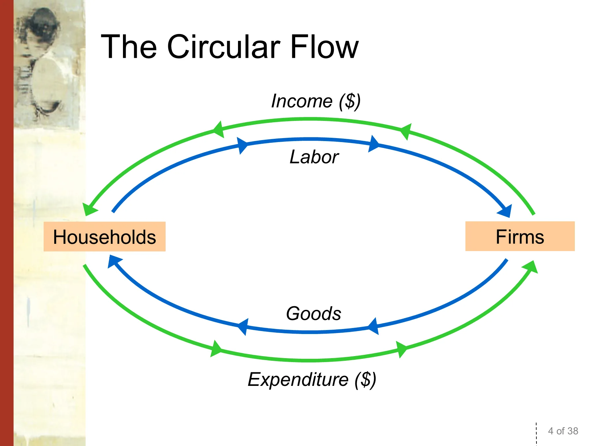
- 图中两条回路：实物流（家庭提供劳动 → 企业生产产品 → 家庭消费）与货币流（企业付工资 = 家庭收入 → 家庭支出 = 企业收入）。
- 循环流量图证明 2-4 的等式：上面的货币流（收入）与下面的货币流（支出）是同一笔钱的两面，所以 Y（产出）= 收入 = 支出。
- 这张图是封闭经济、无政府、无储蓄的简化版本；加上政府（G）与国外部门（NX）就是 2-11 的恒等式。
2-6Value added（增加值）
| 原文 | 中文对照 |
|---|---|
| Value added （增加值） | 增加值 |
| Value added: The value of output minus the value of the intermediate goods used to produce that output. | 增加值：产出的价值减去为生产该产出所使用的中间品的价值。 |
教师备注（原文＋译文）2 段
教师备注（原文照录）
It might be useful here to remind students what the term "intermediate goods" means.
教师备注（译文）
这里提醒学生「中间品」这个词的含义可能是有用的。
- 定义式：VA = 产出价值 − 中间品价值。中间品指被再出售或再加工的产品，不计入最终产品。
- 增加值法的意义：把整条生产链上每一环的增加值相加，结果等于最终产品价值，从而避免重复计算（2-7、2-8）。
2-7Final goods, value added, and GDP
| 原文 | 中文对照 |
|---|---|
| Final goods, value added, and GDP | 最终产品、增加值与 GDP |
| GDP = value of final goods produced | GDP = 生产的最终产品的价值 |
| = sum of value added at all stages of production | = 所有生产阶段增加值之和 |
| Why "final" good? | 为什么是「最终」产品？ |
| - Because the value of the final goods already includes the value of the intermediate goods, so including intermediate goods in GDP would be double-counting. | - 因为最终产品的价值已经包含中间品的价值，把中间品也计入 GDP 会造成重复计算。 |
- 两条等价路径要能互换使用：最终产品法（只算最终销售）与增加值法（逐环节加总），结果必然相等。
- 重复计算的判据：某产品若还要被用于生产别的产品，它就是中间品，不能再单独计入 GDP。
2-8NOW YOU TRY: Identifying value added
| 原文 | 中文对照 |
|---|---|
| NOW YOU TRY: Identifying value added | 现在你来试：识别增加值 |
| A farmer grows a bushel of wheat and sells it to a miller for $1.00. | 农民种了一蒲式耳小麦，以 1.00 美元卖给磨坊主。 |
| The miller turns the wheat into flour and sells it to a baker for $3.00. | 磨坊主把小麦磨成面粉，以 3.00 美元卖给面包师。 |
| The baker uses the flour to make a loaf of bread and sells it to an engineer for $6.00. | 面包师用面粉做成一条面包，以 6.00 美元卖给工程师。 |
| The engineer eats the bread. | 工程师把面包吃掉。 |
| value added at each stage of production | 各生产阶段的增加值 |
| ($1, $3-$1=$2, $6-$3=$3) | （1 美元，3−1=2 美元，6−3=3 美元） |
| GDP=value of final good=$6 | GDP = 最终产品的价值 = 6 美元 |
| =sum of value-added at all stages of production=$1+$2+$3=$6 | = 所有生产阶段增加值之和 = 1+2+3 = 6 美元 |
教师备注（原文＋译文）26 段
教师备注（原文照录）
This is end-of-chapter problem 2.
When students compute GDP, they should assume that these are the only transactions in the economy.
Lessons of this problem:
GDP = value of final goods = sum of value at all stages of production
We don't include the value of intermediate goods in GDP because their value is already embodied in the value of the final goods.
Answer:
Each person's value added (VA) equals the value of what he/she produced minus the value of the intermediate inputs he/she started with.
Farmer's VA = $1
Miller's VA = $2
Baker's VA = $3
GDP = $6
Note that GDP = value of final good = sum of value added at all stages of production.
Even though this problem is highly simplified, its main lesson holds in the real world: The value of all final goods produced equals the sum of value added in all stages of production of all goods.
教师备注（译文）
这是本章末习题第 2 题。
学生计算 GDP 时，应假设这些就是经济中全部的交易。
本题的要点：
GDP = 最终产品的价值 = 所有生产阶段增加值之和
我们不在 GDP 中计入中间品的价值，因为它们的价值已经体现在最终产品的价值中。
答案：
每个人的增加值（VA）等于他/她生产的价值减去他/她开始时投入的中间品价值。
农民的增加值 = 1 美元
磨坊主的增加值 = 2 美元
面包师的增加值 = 3 美元
GDP = 6 美元
注意 GDP = 最终产品的价值 = 所有生产阶段增加值之和。
尽管本题高度简化，其主要结论在现实世界成立：所有最终产品的价值等于所有产品在各生产阶段增加值之和。
- 三个数字：VA = 1、2、3；GDP = 6。陷阱是误把 1+3+6 = 10 当作 GDP（重复计算）。
- 工程师吃掉面包 = 该产品是最终产品；若工程师把面包再转卖，则面包变成中间品，GDP 归属随之改变。
2-9Something to note
| 原文 | 中文对照 |
|---|---|
| Something to note | 需要注意的几点 |
| The sale of used good is not included. | 二手货的销售不计入。 |
| (GDP measures the value of currently produced goods and services.) | （GDP 衡量的是当期生产的商品与服务的价值。） |
| The imputed value of housing services enjoyed by homeowners is included. | 自有住房者享受的住房服务的推算价值计入。 |
| Home production is not included. | 家庭内部生产不计入。 |
| (ex. Suppose Jack marries his barber Rose. GDP decreases.) | （例：假设杰克娶了他的理发师罗斯，GDP 会下降。） |
| Goods and services sold in the underground economy (地下经济）is not included. | 在地下经济中出售的商品与服务不计入。 |
- 四条边界规则要能各举一例： | 项目 | 是否计入 | 理由 | |---|---|---| | 二手车交易 | 不计入 | 非当期生产（但经纪费计入） | | 自有住房的推算租金 | 计入 | 提供了当期的住房服务 | | 家庭内部劳动（做饭、理发） | 不计入 | 无市场交易，无法计价 | | 地下经济 | 不计入 | 无法观测 |
- 「杰克娶理发师」是经典例子：同一项服务从市场交易变为家庭内部生产，GDP 下降但福利未变——说明 GDP 不是福利的完美指标。
2-10The expenditure components of GDP
| 原文 | 中文对照 |
|---|---|
| The expenditure components of GDP | GDP 的支出构成 |
| consumption | 消费 |
| investment | 投资 |
| government spending | 政府支出 |
| net exports | 净出口 |
- 四大成分的顺序即 2-11 恒等式 Y = C + I + G + NX 的顺序；后面 2-12 ~ 2-23 逐一展开，每项都配一张美国 2019 年数据表。
2-11National income accounts identity（国民收入核算恒等式）
| 原文 | 中文对照 |
|---|---|
| National income accounts identity (国民收入核算恒等式) | 国民收入核算恒等式 |
| Y=C+I+G+NX | Y = C + I + G + NX |
| Value of total output = aggregate expenditure | 总产出的价值 = 总支出 |
| Y: GDP | Y：GDP |
| C: consumption (消费) | C：消费 |
| I: investment (投资) | I：投资 |
| G: government expending (purchases) (政府购买) | G：政府支出（购买） |
| NX: net exports (净出口) | NX：净出口 |
- 这个恒等式是会计恒等（永远成立），不是行为方程（不解释因果）。第 3 章会把它拆成 S = I + NX 的储蓄–投资形式（3-42、6-10）。
- 四个字母的定义边界是考试重点：I 不含金融资产购买（2-16），G 不含转移支付（2-20），NX 可正可负（2-23）。
2-12Consumption (C)
| 原文 | 中文对照 |
|---|---|
| Consumption (C) | 消费（C） |
| Definition: The value of all goods and services bought by households. Includes: | 定义：家庭购买的所有商品与服务的价值。包括： |
| Durable goods （耐用品）last a long time. E.g., cars, home appliances | 耐用品：使用时间长。如汽车、家用电器 |
| Nondurable goods（非耐用品）last a short time. E.g., food, clothing | 非耐用品：使用时间短。如食品、衣物 |
| Services（服务）are intangible items purchased by consumers. E.g., dry cleaning, air travel | 服务：消费者购买的无形项目。如干洗、航空旅行 |
教师备注（原文＋译文）10 段
教师备注（原文照录）
A consumer's spending on a new house counts under investment, not consumption. More on this in a few moments, when we get to Investment.
A tenant's spending on rent counts under services—rent is considered spending on "housing services."
So what happens if a renter buys the house she had been renting? Conceptually, consumption should remain unchanged: Just because she is no longer paying rent, she is still consuming the same housing services as before.
In national income accounting, (the services category of) consumption includes the imputed rental value of owner-occupied housing.
To help students keep all this straight, you might suggest that they think of a house as a piece of capital which is used to produce a consumer service, which we might call "housing services." Thus, spending on the house counts in aggregate investment, and the value of the housing services that the house provides counts in aggregate consumption (regardless of whether the housing services are being consumed by the owner of the house or a tenant).
教师备注（译文）
消费者购买新房子的支出计入投资，而不是消费。稍后讲到投资时再详细说。
租客的房租支出计入服务——房租被视为对「住房服务」的支出。
那么，如果租客把她一直租住的房子买下来，会怎样？概念上消费应保持不变：仅仅因为她不再付房租，她消费的住房服务与以前一样。
在国民收入核算中，消费（的服务类别）包含自有住房的推算租金价值。
为帮助学生理清这些，可以建议他们把房子想成一件资本品，用来生产一种消费者服务，我们可以称之为「住房服务」。于是，购买房子的支出计入总投资，房子提供的住房服务的价值计入总消费（无论住房服务是由房主还是租客消费）。
- 三个易错点：新房 → 投资（不是消费）；房租 → 服务（是消费）；自有住房 → 推算租金计入消费。
- 处理原则：把房子看成「生产住房服务的资本品」——买房子是投资，住房服务是消费，房主与租客一视同仁。
- 美国 2019 年消费结构见 2-13：服务 10,237 > 非耐用品 3,011 > 耐用品 1,548（十亿美元）。
2-13U.S. consumption, 2019
| Total (billions of dollars) | Per Person (dollars) | |
|---|---|---|
| Gross Domestic Product | 21,729 | 66,199 |
| Consumption | 14,795 | 45,074 |
| Nondurable goods | 3,011 | 9,173 |
| Durable goods | 1,548 | 4,715 |
| Services | 10,237 | 31,186 |
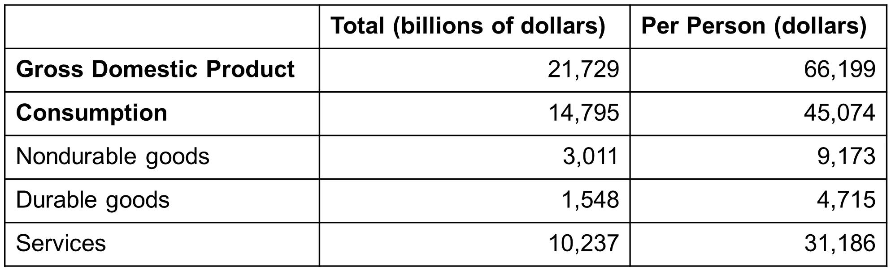
| 总额（十亿美元） | 人均（美元） | |
|---|---|---|
| 国内生产总值 | 21,729 | 66,199 |
| 消费 | 14,795 | 45,074 |
| 非耐用品 | 3,011 | 9,173 |
| 耐用品 | 1,548 | 4,715 |
| 服务 | 10,237 | 31,186 |
教师备注（原文＋译文）2 段
教师备注（原文照录）
Source: Bureau of Economic Analysis (http://www.bea.gov), U.S. Department of Commerce
教师备注（译文）
来源：美国商务部经济分析局（http://www.bea.gov）
- 两个比例必记：消费/GDP = 14,795/21,729 ≈ 68.1%；消费中服务占 10,237/14,795 ≈ 69.2%。
- 三项之和校验：3,011 + 1,548 + 10,237 = 14,796，与 14,795 差 1（四舍五入），可放心引用。
- 人均口径除以约 3.282 亿人（21,729/66,199）。
2-14Investment (I)
| 原文 | 中文对照 |
|---|---|
| Investment (I) | 投资（I） |
| Spending on capital, a physical asset used in future production | 对资本的支出，即用于未来生产的实物资产 |
| Includes: | 包括： |
| Business fixed investment （企业固定投资）Spending on plant and equipment | 企业固定投资：对厂房与设备的支出 |
| Residential fixed investment （住房固定投资）Spending by consumers and landlords on housing units | 住房固定投资：消费者与房东对住房单元的支出 |
| Inventory investment （存货投资）The change in the value of all firms' inventories | 存货投资：所有企业存货价值的变化 |
教师备注（原文＋译文）20 段
教师备注（原文照录）
Note that aggregate investment equals total spending on newly produced capital goods. If I pay $1,000 for a used computer for my business, then I'm doing $1,000 of investment, but the person who sold it to me is doing $1,000 of disinvestment, so there is no net impact on aggregate investment.
The housing issue
A consumer's spending on a new house counts under investment, not consumption.
A tenant's spending on rent counts under services—rent is considered spending on "housing services."
So what happens if a renter buys the house she had been renting? Conceptually, consumption should remain unchanged: Just because she is no longer paying rent, she is still consuming the same housing services as before.
In national income accounting, (the services category of) consumption includes the imputed rental value of owner-occupied housing.
To help students keep all this straight, you might suggest that they think of a house as a piece of capital which is used to produce a consumer service, which we might call "housing services." Thus, spending on the house counts in aggregate investment, and the value of the housing services that the house provides counts in aggregate consumption (regardless of whether the housing services are being consumed by the owner of the house or a tenant).
Inventories
If total inventories are $10 billion at the beginning of the year and $12 billion at the end, then inventory investment equals $2 billion for the year.
Note that inventory investment can be negative (which means inventories fell over the year).
教师备注（译文）
注意，总投资等于对新生产的资本品的总支出。如果我花 1,000 美元为企业买了一台二手电脑，我做了 1,000 美元投资，但卖给我的人做了 1,000 美元负投资，所以对总投资没有净影响。
住房问题
消费者购买新房的支出计入投资，而不是消费。
租客的房租支出计入服务——房租被视为对「住房服务」的支出。
那么，如果租客把她一直租住的房子买下来，会怎样？概念上消费应保持不变：仅仅因为她不再付房租，她消费的住房服务与以前一样。
在国民收入核算中，消费（的服务类别）包含自有住房的推算租金价值。
为帮助学生理清这些，可以建议他们把房子想成一件资本品，用来生产一种消费者服务，我们可以称之为「住房服务」。于是，购买房子的支出计入总投资，房子提供的住房服务的价值计入总消费（无论住房服务是由房主还是租客消费）。
存货
如果年初存货总额为 100 亿美元、年末为 120 亿美元，则该年的存货投资为 20 亿美元。
注意存货投资可以为负（意味着年内存货下降）。
- 三类投资的分界：企业固定（厂房设备）、住房固定（住宅）、存货（存货变动）。注意「非住宅固定投资」在 2-15 中与「企业固定投资」同义。
- 存货投资 = 期末存货 − 期初存货，可为负；举例 10 → 12 十亿美元，则当年存货投资 +2 十亿美元。
- 二手资本品不计入总投资：买方 +1,000、卖方 −1,000，净额为零。
2-15U.S. investment, 2019
| Total (billions of dollars) | Per Person (dollars) | |
|---|---|---|
| Gross Domestic Product | 21,729 | 66,199 |
| Investment | 3,698 | 11,267 |
| Nonresidential fixed investment | 2,869 | 8,721 |
| Residential fixed investment | 818 | 2,491 |
| Inventory investment | 18 | 55 |
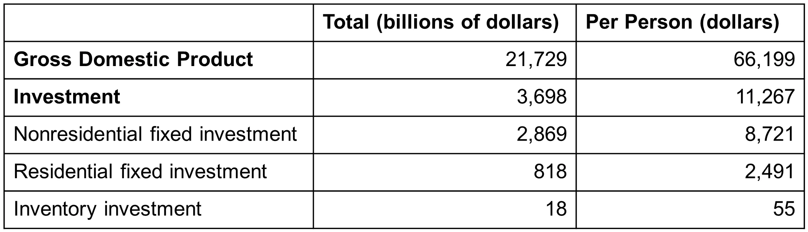
| 总额（十亿美元） | 人均（美元） | |
|---|---|---|
| 国内生产总值 | 21,729 | 66,199 |
| 投资 | 3,698 | 11,267 |
| 非住宅固定投资 | 2,869 | 8,721 |
| 住宅固定投资 | 818 | 2,491 |
| 存货投资 | 18 | 55 |
教师备注（原文＋译文）4 段
教师备注（原文照录）
Source: Bureau of Economic Analysis (http://www.bea.gov), U.S. Department of Commerce
Third-quarter advance estimate (released 12/23/2014)
教师备注（译文）
来源：美国商务部经济分析局（http://www.bea.gov）
第三季度预先估计值（2014 年 12 月 23 日发布）
- 投资/GDP = 3,698/21,729 ≈ 17.0%，远小于消费的 68.1%——这是美国经济的典型结构。
- 三项加总：2,869 + 818 + 18 = 3,705，与 3,698 差 7（统计误差/四舍五入）。
- 注意备注中的「2014 年 12 月 23 日发布」与标题「2019」不一致，原页如此；引用时以表头年份为准。
2-16Investment（投资）？？？
| 原文 | 中文对照 |
|---|---|
| Investment（投资）？？？ | 投资？？？ |
| Capital is one of the factors of production. | 资本是生产要素之一。 |
| Investment is spending on new capital and goods bought for future use. | 投资是对新资本以及为未来使用而购买的商品的支出。 |
| Ex. | 例： |
| 1. Gates buys $5 million in IBM stock from Buffett on the New York Stock Exchange. | 1. 盖茨在纽约证券交易所从巴菲特手中买入 500 万美元 IBM 股票。 |
| 2. General motor sells $10 million in stock to the public and uses the proceeds to build a new car factory. | 2. 通用汽车向公众发行 1000 万美元股票，并用所得资金建造新的汽车工厂。 |
- 标题的「？？？」是提问：这两个例子哪个是宏观意义上的投资？
- 答案：例 1 不是投资（只是金融资产在两人之间的转手，无新资本形成）；例 2 是投资（发行股票筹资建厂，形成新的固定资本）。
- 判别标准只有一条：是否创造了新的实物资本。买卖股票、债券、二手房都不算 I。
2-17Stocks（存量）vs. Flows（流量）
| 原文 | 中文对照 |
|---|---|
| Stocks（存量） vs. Flows（流量） | 存量与流量 |
| Stock | 存量 |
| Flow | 流量 |
| A stock is a quantity measured at a point in time. | 存量是在某一时点上衡量的数量。 |
| E.g., "The U.S. capital stock was $10 trillion on January 1, 2020." | 例：「2020 年 1 月 1 日，美国资本存量为 10 万亿美元。」 |
| A flow is a quantity measured per unit of time. | 流量是按单位时间衡量的数量。 |
| E.g., "U.S. investment was $2 trillion during 2020." | 例：「2020 年期间，美国投资为 2 万亿美元。」 |
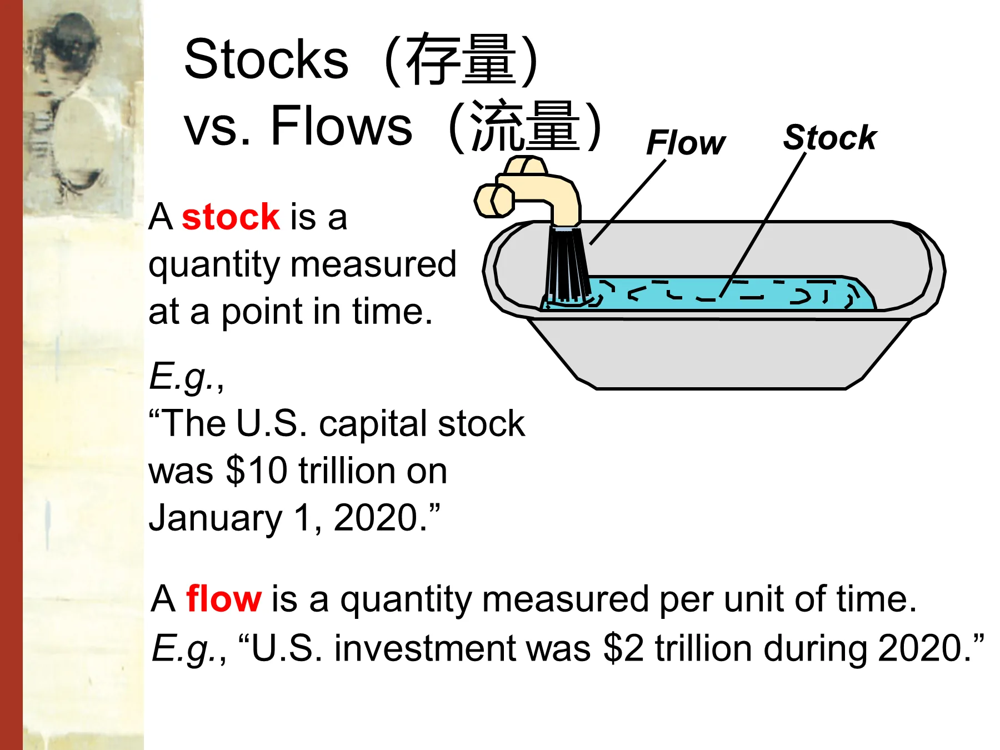
教师备注（原文＋译文）2 段
教师备注（原文照录）
The bathtub example is the classic means of explaining stocks and flows, and appears in Chapter 2.
教师备注（译文）
浴缸的例子是解释存量与流量的经典方式，出现在第 2 章。
- 判据：有没有「每单位时间」。存量带时点（2020-01-01），流量带时段（2020 年全年）。
- 浴缸比喻：水量 = 存量，水龙头流入 = 流量（投资），排水 = 负流量（折旧）。存量是流量的累积。
- 对应关系：资本存量（K）是存量，投资（I）是流量，且 ΔK = I − 折旧。
2-18Stocks vs. Flows: Examples
| 原文 | 中文对照 |
|---|---|
| Stocks vs. Flows: Examples | 存量与流量：例子 |
| Stock | 存量 |
| Flow | 流量 |
| a person's wealth | 一个人的财富 |
| a person's annual savings | 一个人的年储蓄 |
| # of people with college degrees | 拥有大学学位的人数 |
| # of new college graduates this year | 今年的新大学毕业生人数 |
| the govt debt | 政府债务 |
| the govt budget deficit | 政府预算赤字 |
教师备注（原文＋译文）8 段
教师备注（原文照录）
Point out that a specific quantity of a flow variable only makes sense if you know the size of the time unit.
If someone tells you his/her salary is $5,000 but does not say whether it is per month or per year or otherwise, then you'd have no idea what his/her salary really is.
A pitfall with flow variables is that many of them have a very standard time unit (e.g., per year). Therefore, people often omit the time unit: "John's salary is $50,000." And omitting the time unit makes it easy to forget that John's salary is a flow variable, not a stock.
Another point: It is often the case that a flow variable measures the rate of change in a corresponding stock variable, as the examples on this slide (and the investment/capital example) make clear.
教师备注（译文）
指出：流量变量的具体数值只有在知道时间单位大小的情况下才有意义。
如果某人告诉你他的薪水是 5,000 美元，却不说这是每月、每年还是别的，你根本不知道他的薪水到底是多少。
流量变量的一个陷阱是：许多流量的时间单位非常标准（如每年），因此人们常常省略时间单位：「约翰的薪水是 50,000。」而省略时间单位很容易让人忘记约翰的薪水是流量变量，而不是存量。
另一点：流量变量常常衡量对应存量变量的变化率，本页的例子（以及投资/资本的例子）清楚说明了这一点。
- 三对必须能互换： | 存量 | 流量 | |---|---| | 财富 | 年储蓄 | | 大学学位人数 | 今年新毕业生数 | | 政府债务 | 预算赤字 |
- 关系式：流量 = 存量的变化率（储蓄 → 财富；赤字 → 债务；投资 → 资本）。
2-19NOW YOU TRY: Stock or Flow?
| 原文 | 中文对照 |
|---|---|
| NOW YOU TRY: Stock or Flow? | 现在你来试：存量还是流量？ |
| The balance on your credit card statement | 你信用卡账单上的余额 |
| How much time you spend studying | 你花多少时间学习 |
| The length of a Spotify playlist | Spotify 播放列表的长度 |
| The inflation rate | 通货膨胀率 |
| The unemployment rate | 失业率 |
教师备注（原文＋译文）18 段
教师备注（原文照录）
You can use this slide to get some class participation. I suggest you display the entire slide, give students a few moments to formulate their answers, and then ask for volunteers. Doing so results in wider participation than if you ask for someone to volunteer the answer immediately after displaying each item on the list.
Here are the answers, and explanations:
The balance on your credit card statement is a stock. (A corresponding flow would be the amount of new purchases on your credit card statement.)
How much time you study is a flow. The statement "I study 10 hours" is only meaningful if we know the time period—whether 10 hours per day, per week, per month, etc.
The size of your compact disc or MP3 collection is a stock. (A corresponding flow would be how many CDs you buy per month or how many MP3 tracks you buy per month.)
The inflation rate is a flow: We say "prices are increasing by 3.2% per year" or "by 0.4% per month."
The unemployment rate is a stock: It's the number of unemployed people divided by the number of people in the workforce. In contrast, the number of newly unemployed people per month would be a flow.
Note: Students have not yet seen official definitions of the inflation and unemployment rates. However, it is likely they are familiar with these terms, either from their introductory economics course or from reading the newspaper.
Note: The stocks vs. flows concept is not mentioned very much in the subsequent chapters. If you do not want your students to forget it, then a good idea would be to do the following: As subsequent chapters introduce new variables, ask students whether each new variable is a stock or a flow.
教师备注（译文）
你可以用这一页来做课堂互动。建议先把整页显示出来，给学生一点时间组织答案，再请人回答。这样做比每显示一项就立刻请人回答的参与度更高。
答案与解释如下：
信用卡账单上的余额是存量。（对应的流量是你信用卡上新增消费的金额。）
你学习多少时间是流量。「我学 10 小时」这句话只有在知道时间段——每天、每周还是每月 10 小时——时才有意义。
你的 CD 或 MP3 收藏规模是存量。（对应的流量是你每月买多少张 CD 或多少首 MP3。）
通胀率是流量：我们说「物价每年上涨 3.2%」或「每月上涨 0.4%」。
失业率是存量：它是失业人数除以劳动力人数。相比之下，每月新增失业人数才是流量。
注：学生此时还没见过通胀率与失业率的官方定义。但他们可能已经熟悉这些词，无论是从经济学原理课还是从读报纸。
注：存量与流量的概念在后面各章提得不多。如果你不想让学生忘掉，一个好办法是：后续各章引入新变量时，问学生每个新变量是存量还是流量。
- 五项答案：余额=存量；学习时间=流量；播放列表长度=存量；通胀率=流量；失业率=存量。
- 最容易错的是「失业率=存量」：它是比率，分子分母都是人数（存量），所以整体是存量；而「每月新增失业人数」才是流量。
- 通胀率是流量，因为它本身就是「每单位时间的百分比变化」（% per year）。
2-20Government spending (G)
| 原文 | 中文对照 |
|---|---|
| Government spending (G) | 政府支出（G） |
| G includes all government spending on goods and services. | G 包括政府对商品与服务的全部支出。 |
| G excludes transfer payments (e.g., unemployment insurance payments) because they do not represent spending on goods and services. | G 不包括转移支付（如失业保险金），因为它们不代表对商品与服务的支出。 |
教师备注（原文＋译文）2 段
教师备注（原文照录）
Transfer payments are included in "government outlays," but not in government spending. People who receive transfer payments use these funds to pay for their consumption. Thus, we avoid double-counting by excluding transfer payments from G.
教师备注（译文）
转移支付计入「政府支出总额（outlays）」，但不计入政府购买（government spending）。领取转移支付的人用这些钱去支付消费。因此，把转移支付排除在 G 之外可以避免重复计算。
- 关键区分：government purchases（G）≠ government outlays（政府总支出）。G 只含购买商品与服务（含政府雇员工资），不含转移支付与国债利息。
- 排除转移支付的理由是避免重复计算：养老金最终会变成领取者的消费 C，若也计入 G 就重复了。
2-21U.S. government spending, 2019
| Total (billions of dollars) | Per Person (dollars) | |
|---|---|---|
| Gross Domestic Product | 21,729 | 66,199 |
| Government Purchases | 3,814 | 11,619 |
| Federal | 1,450 | 4,417 |
| Defense | 862 | 2,626 |
| Nondefense | 588 | 1,790 |
| State and local | 2,364 | 1,790 |
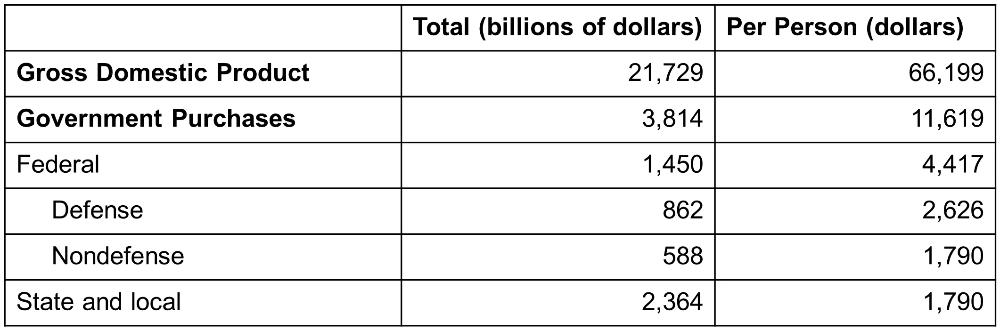
| 总额（十亿美元） | 人均（美元） | |
|---|---|---|
| 国内生产总值 | 21,729 | 66,199 |
| 政府购买 | 3,814 | 11,619 |
| 联邦 | 1,450 | 4,417 |
| 国防 | 862 | 2,626 |
| 非国防 | 588 | 1,790 |
| 州与地方 | 2,364 | 1,790 |
教师备注（原文＋译文）2 段
教师备注（原文照录）
Source: Bureau of Economic Analysis (http://www.bea.gov), U.S. Department of Commerce
教师备注（译文）
来源：美国商务部经济分析局（http://www.bea.gov）
- 政府购买/GDP = 3,814/21,729 ≈ 17.6%；联邦占 1,450（其中国防 862、非国防 588），州与地方占 2,364。
- 原页「State and local 的人均 1,790」与总额 2,364 不符：按 3.282 亿人计算应约为 7,203 美元；1,790 与上一行「Nondefense」重复，应为笔误。照录不改，引用时以总额为准。
- 校验：1,450 + 2,364 = 3,814 ✓。
2-22Net exports（NX = EX − IM）
| 原文 | 中文对照 |
|---|---|
| Net exports (NX = EX - IM) | 净出口（NX = EX − IM） |
| def: the value of total exports (EX) minus the value of total imports (IM) | 定义：出口总值（EX）减去进口总值（IM） |
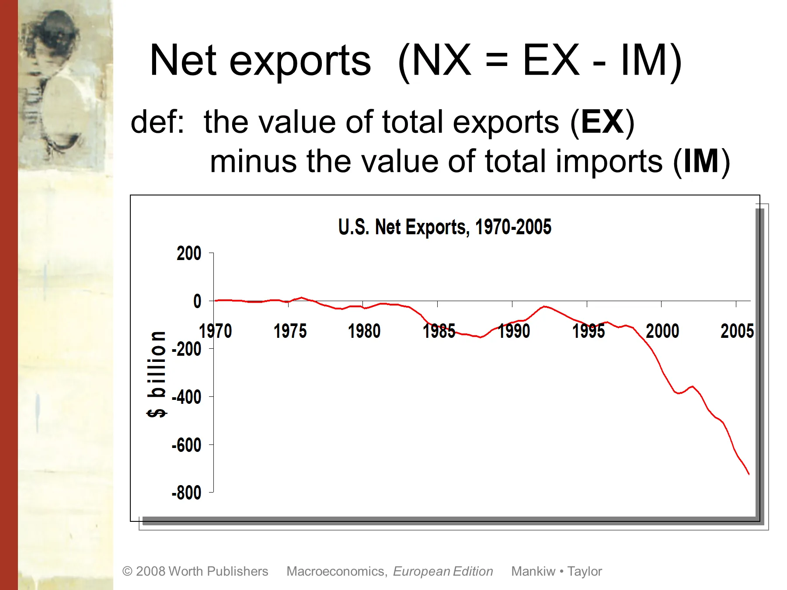
教师备注（原文＋译文）6 段
教师备注（原文照录）
source: FRED Database, The Federal Reserve Bank of St. Louis,
http://www.stls.frb.org/fred/
One issue of debate among macroeconomists is whether the US will be able to sustain such a large trade deficit (€720 bn in 2005) or whether a devaluation of the US dollar is necessary to correct the imbalance. (A devaluation would make US goods cheaper and therefore more competitive, while making US imports more expensive)
教师备注（译文）
来源：圣路易斯联邦储备银行 FRED 数据库，
http://www.stls.frb.org/fred/
宏观经济学家争论的一个问题是：美国能否维持如此巨大的贸易赤字（2005 年为 7,200 亿欧元），还是必须让美元贬值才能纠正这一失衡。（贬值会使美国商品更便宜、因而更有竞争力，同时使美国进口品更昂贵。）
- 图中曲线即美国净出口 1970–2005：1970 年代基本在零附近，1980 年代转为持续逆差，2000 年后加速恶化至约 −800 十亿美元。
- NX 为负 = 贸易赤字 = 进口 > 出口；对应第 6 章的资本净流入（外国人在买本国资产）。
- 备注中的「贬值改善贸易余额」有前提：马歇尔–勒纳条件（进出口弹性之和 > 1），且短期可能先恶化（J 曲线）。
2-23U.S. net exports, 2019
| Total (billions of dollars) | Per Person (dollars) | |
|---|---|---|
| Gross Domestic Product | 21,729 | 66,199 |
| Net Exports | –578 | –1,761 |
| Exports | 2,498 | 7,609 |
| Imports | 3,076 | 9,370 |
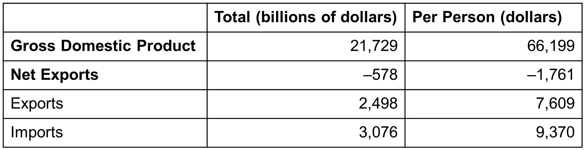
| 总额（十亿美元） | 人均（美元） | |
|---|---|---|
| 国内生产总值 | 21,729 | 66,199 |
| 净出口 | −578 | −1,761 |
| 出口 | 2,498 | 7,609 |
| 进口 | 3,076 | 9,370 |
教师备注（原文＋译文）2 段
教师备注（原文照录）
Source: Bureau of Economic Analysis (http://www.bea.gov), U.S. Department of Commerce
教师备注（译文）
来源：美国商务部经济分析局（http://www.bea.gov）
- 校验：2,498 − 3,076 = −578 ✓。净出口/GDP = −578/21,729 ≈ −2.7%。
- 注意「负数人均」的读法：−1,761 美元表示人均进口比出口多 1,761 美元。
2-24NOW YOU TRY: An expenditure-output puzzle?
| 原文 | 中文对照 |
|---|---|
| NOW YOU TRY: An expenditure-output puzzle? | 现在你来试：支出与产出的谜题？ |
| Suppose a firm: | 假设一家企业： |
| produces $10 million worth of final goods | 生产了价值 1000 万美元的最终产品 |
| only sells $9 million worth | 只卖出了 900 万美元 |
| Does this violate the expenditure = output identity? | 这是否违反了「支出 = 产出」的恒等式？ |
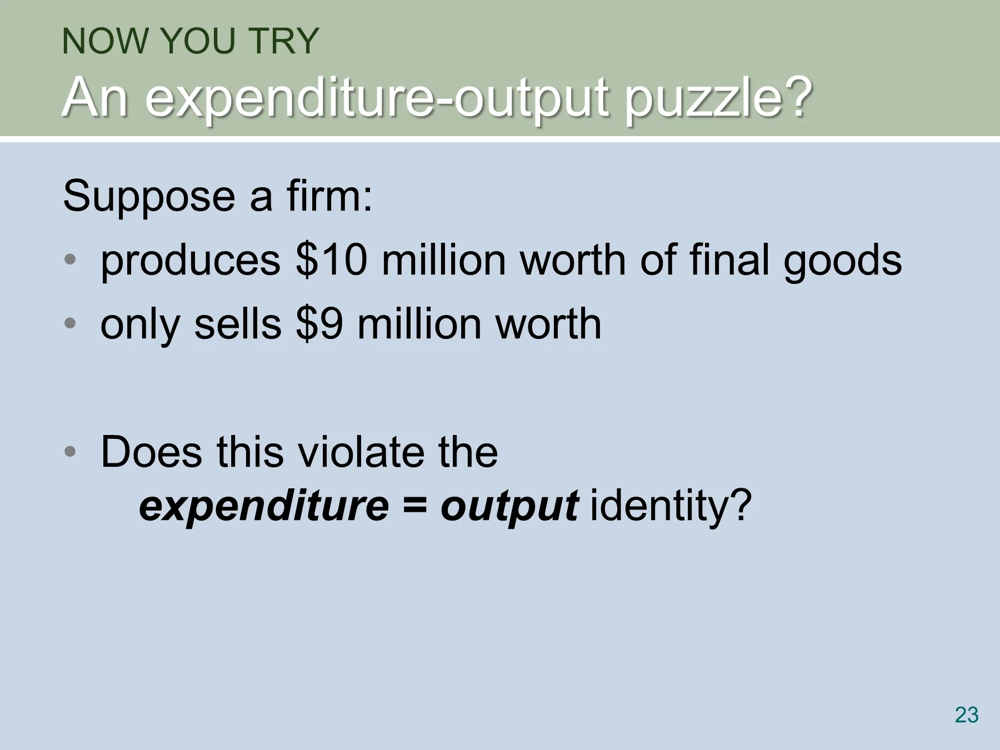
教师备注（原文＋译文）14 段
教师备注（原文照录）
If you do not wish to pose this as a question, you can "hide" this slide and skip right to the next one, which simply gives students the information.
Suggestion (applies generally, not just here):
When you pose a question like this to your class, don't ask for students to volunteer their answers right away. Instead, tell them to think about it for a minute and write their answer down on paper. Then, ask for volunteers (or call on students at random). Giving students this extra minute will increase the quality of participation as well as the number of students who participate.
Correct answer to the question:
Unsold output adds to inventory, and thus counts as inventory investment—whether intentional or unplanned. Thus, it's as if a firm "purchased" its own inventory accumulation.
Here's where the "goods purchased for future use" definition of investment is handy: When firms add newly produced goods to their inventory, the "future use" of those goods, of course, is future sales.
Note, also, that inventory investment counts intentional as well as unplanned inventory changes. Thus, when firms sell fewer units than planned, the unsold units go into inventory and are counted as inventory investment. This explains why "output = expenditure"—the value of unsold output is counted under inventory investment, just as if the firm "purchased" its own output. Remember, the definition of investment is goods bought for future use. With inventory investment that future use is to give the firm the ability in the future to sell more than its output.
教师备注（译文）
如果你不想把它当作提问，可以「隐藏」这一页，直接跳到下一页，那一页直接给出信息。
建议（普遍适用，不只此处）：
当你向全班提出这样的问题时，不要立刻请学生举手回答。而是让他们先想一分钟，把答案写在纸上。然后再请人回答（或随机点名）。多给这一分钟会提高回答的质量与参与人数。
本题正确答案：
未售出的产出进入存货，因而计为存货投资——无论是有意还是非计划的。于是，就好像企业「购买」了自己的存货积累。
这里正好用上「为未来使用而购买的商品」这个投资定义：当企业把新生产的商品加入存货时，这些商品的「未来使用」当然就是未来的销售。
还要注意，存货投资既计入有意的存货变动，也计入非计划的变动。因此，当企业售出的数量少于计划时，未售出的单位进入存货并计为存货投资。这就解释了为什么「产出 = 支出」——未售出产出的价值计入存货投资，就好像企业「购买」了自己的产出。记住，投资的定义是为未来使用而购买的商品。就存货投资而言，这种未来使用是让企业在未来能够卖出超过其产出的数量。
- 答案：不违反。未售出的 1,000 万美元计入存货投资，所以支出侧 = 900 万（消费/销售）+ 100 万（存货投资）= 1,000 万 = 产出。
- 这是「产出 = 支出」恒等式成立的关键机制，也是 2-25 的内容。库存变动可以是非计划的，但在核算上仍算投资。
- 推论：GDP 上升不一定意味着卖得好——存货被动累积也会推高 GDP（这被称为「存货性增长」）。
2-25Why output = expenditure
| 原文 | 中文对照 |
|---|---|
| Why output = expenditure | 为什么产出 = 支出 |
| Unsold output goes into inventory, and is counted as "inventory investment" . . . whether or not the inventory buildup was intentional. | 未售出的产出进入存货，并被计为「存货投资」……无论存货积累是否有意为之。 |
| In effect, we are assuming that firms purchase their unsold output. | 实际上，我们是在假设企业购买了自己未售出的产出。 |
- 一句话结论：存货投资是恒等式的平衡项。没有它，Y ≠ E 就会处处成立。
- 「企业购买自己的产出」是核算上的虚构，但它使 2-24 的谜题消失，也让第 3 章的产品市场均衡（Y = C + I + G）在会计上无懈可击。
2-26GDP: An important and versatile concept
| 原文 | 中文对照 |
|---|---|
| GDP: An important and versatile concept | GDP：一个重要而多用途的概念 |
| We have now seen that GDP measures: | 我们现在已经看到，GDP 衡量： |
| total income | 总收入 |
| total output | 总产出 |
| total expenditure | 总支出 |
| the sum of value added at all stages in the production of final goods | 最终产品生产各阶段增加值之和 |
教师备注（原文＋译文）2 段
教师备注（原文照录）
This is why economists often use the terms income, output, expenditure, and GDP interchangeably.
教师备注（译文）
这就是为什么经济学家常常把收入、产出、支出与 GDP 这几个词互换使用。
- 四种口径（收入、产出、支出、增加值之和）数值恒等，因此第 3 章可以放心地写 Y = F(K, L) 又把 Y 当作需求侧的总量。
- 考试中若题目说「产出」而答案用「收入」推导，不算错——但要说明依据是 2-26 的恒等性。
2-27GNP（国民生产总值）vs. GDP（国内生产总值）
| 原文 | 中文对照 |
|---|---|
| GNP (国民生产总值) vs. GDP (国内生产总值) | 国民生产总值 vs. 国内生产总值 |
| Gross national product (GNP): Total income earned by the nation's factors of production, regardless of where located. | 国民生产总值（GNP）：本国生产要素赚取的总收入，无论位于何处。 |
| Gross domestic product (GDP): Total income earned by domestically-located factors of production, regardless of nationality. | 国内生产总值（GDP）：本国境内的生产要素赚取的总收入，无论国籍。 |
| GNP – GDP = factor payments from abroad minus factor payments to abroad | GNP − GDP = 来自国外的要素支付 − 支付给国外的要素支付 |
| Examples of factor payments: wages, profits, rent, interest & dividends on assets | 要素支付的例子：工资、利润、租金、资产的利息与股息 |
教师备注（原文＋译文）20 段
教师备注（原文照录）
Emphasize that the difference between GDP and GNP boils down to two things: location of the economic activity, and ownership (domestic vs. foreign) of the factors of production.
From the perspective of the U.S., factor payments from abroad include things like:
wages earned by U.S. citizens working abroad
profits earned by U.S.-owned businesses located abroad
income (interest, dividends, rent, etc) generated from the foreign assets owned by U.S. citizens
Factor payments to abroad include things like:
wages earned by foreign workers in the U.S.
profits earned by foreign-owned businesses located in the U.S.
income (interest, dividends, rent, etc) that foreigners earn on U.S. assets
Chapter 3 introduces factor markets and factor prices. Unless you've already covered that material, it might be worth mentioning to your students that factor payments are simply payments to the factors of production, for example, the wages earned by labor.
教师备注（译文）
强调 GDP 与 GNP 的差别归结为两点：经济活动的地点，以及生产要素的所有权（本国还是外国）。
从美国的角度看，来自国外的要素支付包括：
美国公民在国外工作赚取的工资
美国所有的企业在外国的分支赚取的利润
美国公民持有的外国资产所产生的收入（利息、股息、租金等）
支付给国外的要素支付包括：
外国工人在美国赚取的工资
外国所有的企业在美国的分支赚取的利润
外国人在美国资产上赚取的收入（利息、股息、租金等）
第 3 章会介绍要素市场与要素价格。如果你还没讲到那部分，可以顺带告诉学生：要素支付就是对生产要素的支付，例如劳动赚取的工资。
- 一句话记法：GDP 按地点，GNP 按国籍。
- 公式：GNP − GDP = 来自国外的要素支付 − 支付给国外的要素支付（即净要素收入 NFP）。
- 两者都不含转移支付（侨汇、援助），只含要素报酬——这是常错点。
2-28NOW YOU TRY: Discussion Question
| 原文 | 中文对照 |
|---|---|
| NOW YOU TRY: Discussion Question | 现在你来试：讨论题 |
| In your country, which would you want to be bigger, GDP or GNP? | 在你的国家，你希望哪一个更大：GDP 还是 GNP？ |
| Why? | 为什么？ |
教师备注（原文＋译文）8 段
教师备注（原文照录）
This issue is subjective, and the question is intended to get students to think a little deeper about the difference between GNP and GDP. Of course, there is no single correct answer.
Some students offer this response:
It's better to have GNP > GDP, because it means our nation's income is greater than the value of what we are producing domestically.
If, instead, GDP > GNP, then a portion of the income generated in our country is going to people in other countries, so there's less income left over for us to enjoy.
教师备注（译文）
这个问题是主观的，目的是让学生更深入地思考 GNP 与 GDP 的差别。当然没有唯一正确答案。
有些学生这样回答：
最好是 GNP > GDP，因为这意味着我们国民的收入大于我们在国内生产的价值。
反之，如果 GDP > GNP，那么在我国创造的收入有一部分流向了其他国家的人，留给我们自己享受的收入就更少。
- 标准答法：看国家类型。资本输出国（日本、美国）GNP > GDP 更有利；资本输入国（中国、爱尔兰）GDP > GNP 是常态，因为外资利润要汇出。
- 数据支撑见 2-29：爱尔兰 GDP 比 GNP 大 18.3%，中国大 0.5%，日本 GNP 比 GDP 大 3.2%。
2-29GNP vs. GDP in Select Countries, 2012
| Country | GNP | GDP | GNP – GDP (% of GDP) |
|---|---|---|---|
| Bangladesh | 127,672 | 116,355 | 9.7 |
| Japan | 6,150,132 | 5,961,066 | 3.2 |
| China | 8,184,963 | 8,227,103 | -0.5 |
| United States | 16,514,500 | 16,244,600 | 1.7 |
| India | 1,837,279 | 1,858,740 | -1.2 |
| Canada | 1,821,424 | 1,779,635 | 2.3 |
| Greece | 250,167 | 248,939 | 0.5 |
| Iraq | 216,453 | 215,838 | 0.3 |
| Ireland | 171,996 | 210,636 | -18.3 |
GNP and GDP in millions of current U.S. dollars.
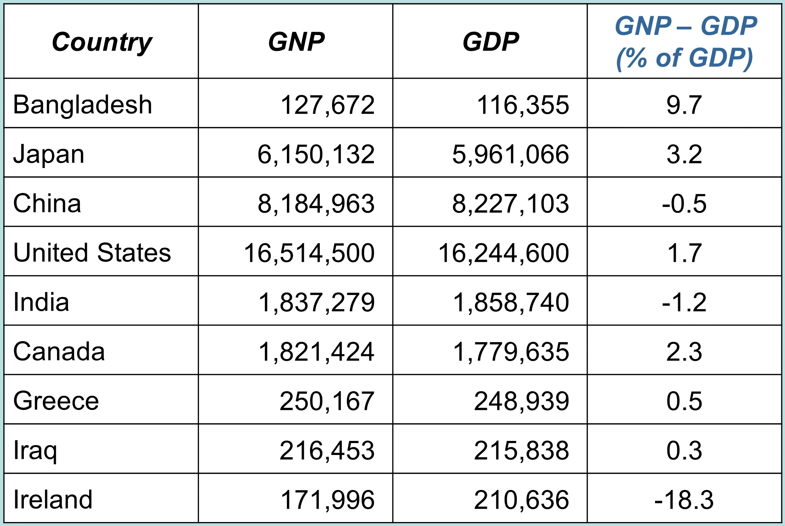
| 国家 | GNP | GDP | GNP − GDP（占 GDP %） |
|---|---|---|---|
| 孟加拉国 | 127,672 | 116,355 | 9.7 |
| 日本 | 6,150,132 | 5,961,066 | 3.2 |
| 中国 | 8,184,963 | 8,227,103 | −0.5 |
| 美国 | 16,514,500 | 16,244,600 | 1.7 |
| 印度 | 1,837,279 | 1,858,740 | −1.2 |
| 加拿大 | 1,821,424 | 1,779,635 | 2.3 |
| 希腊 | 250,167 | 248,939 | 0.5 |
| 伊拉克 | 216,453 | 215,838 | 0.3 |
| 爱尔兰 | 171,996 | 210,636 | −18.3 |
单位：百万当期美元。
教师备注（原文＋译文）32 段
教师备注（原文照录）
How to interpret the numbers in this table:
In Japan, GNP is 3.2% bigger than GDP. This means that the income earned by all Japanese citizens is 3.2% larger than the value of production occurring within Japan's borders.
In India, GNP is 1.2% smaller than GDP. This means that 1.2% of all the income earned in India leaves the country and is paid to foreigners.
In Ireland, 18.3% of the value of domestic production is paid to foreigners.
Teaching suggestion:
Point out a few countries with positive numbers. Ask your students to take a moment to think of possible reasons why GNP might exceed GDP in a country, and write them down. Point out a few countries with negative numbers. Ask your students to take a moment to think of possible reasons why a country's GDP might be bigger than its GNP, and write them down. After students have had a chance to think of some reasons, ask for volunteers. (Better yet, have them pair up and compare answers with a classmate before volunteering their answers to the class.)
Reasons GNP may exceed GDP:
Country has done a lot of lending or investment overseas and is earning lots of income from these foreign investments (income on nationally owned capital located abroad).
A significant number of citizens have left the country to work overseas; their income is counted in GNP, not GDP.
Reasons GDP may exceed GNP:
Country has done a lot of borrowing from abroad, or foreigners have done a lot of investment in the country (income earned by foreign-owned domestically located capital).
Country has a large immigrant labor force.
If one of your students asks a question like "Why is the figure for country X so negative?" or otherwise inquires into the particular circumstances of a country's figure, you may refer them to the CIA World Factbook for more details on any of these countries.
Source: World Development Indicators, World Bank.
http://datacatalog.worldbank.org/
At the time I write this (June 2014), the latest available GNP figures are for 2012.
教师备注（译文）
如何解读表中的数字：
在日本，GNP 比 GDP 大 3.2%。这意味着所有日本公民赚取的收入，比在日本国境内发生的生产价值大 3.2%。
在印度，GNP 比 GDP 小 1.2%。这意味着印度境内赚取的全部收入中有 1.2% 流出本国、支付给外国人。
在爱尔兰，国内生产价值的 18.3% 支付给了外国人。
教学建议：
指出几个数字为正的国家，让学生花点时间想想一国 GNP 可能大于 GDP 的原因，并写下来。再指出几个数字为负的国家，让学生想想一国 GDP 可能大于 GNP 的原因，并写下来。学生想过之后，请人回答。（更好的做法是让他们两两配对、与同学比较答案后再向全班回答。）
GNP 可能大于 GDP 的原因：
该国大量对外放贷或投资，并从这些海外投资中获得大量收入（本国所有的海外资本所产生的收入）。
大量本国公民出国工作；他们的收入计入 GNP，不计入 GDP。
GDP 可能大于 GNP 的原因：
该国大量对外借债，或外国人在该国大量投资（外国所有的境内资本所赚取的收入）。
该国有大量移民劳动力。
如果有学生问「为什么 X 国的数字负得这么多」之类关于某国具体情形的问题，可以让他们查 CIA World Factbook 了解这些国家的详情。
来源：世界银行《世界发展指标》。
http://datacatalog.worldbank.org/
我写这段话时（2014 年 6 月），可得的 GNP 数据最新为 2012 年。
- 极值必须记：孟加拉国 +9.7%（大量劳工侨汇与海外工作）、爱尔兰 −18.3%（外资企业利润汇出）、中国 −0.5%、日本 +3.2%。
- 爱尔兰的 −18.3% 是「外资主导型经济体」的典型：GDP 记在生产地，利润归外国股东，所以 GNP 远小于 GDP。
- 单位是百万美元：日本 GNP 6,150,132 百万 = 6.15 万亿美元。
2-30Real（实际）vs. nominal（名义）GDP
| 原文 | 中文对照 |
|---|---|
| Real（实际） vs. nominal （名义）GDP | 实际 GDP 与名义 GDP |
| GDP is the value of all final goods and services produced. | GDP 是所有生产的最终产品与服务的价值。 |
| Nominal GDP measures these values using current prices. | 名义 GDP 用当期价格衡量这些价值。 |
| Real GDP measures these values using the prices of a base year（基年）. | 实际 GDP 用基年价格衡量这些价值。 |
- 唯一区别是用哪一年的价格：当期价格 → 名义；基年价格 → 实际。
- 因此名义 GDP 的变动混合了「价格变动」与「数量变动」，实际 GDP 只反映数量变动（2-33）。
2-31NOW YOU TRY: Real and nominal GDP
| 2010 P | 2010 Q | 2011 P | 2011 Q | 2012 P | 2012 Q | |
|---|---|---|---|---|---|---|
| good A | $30 | 900 | $31 | 1,000 | $36 | 1,050 |
| good B | $100 | 192 | $102 | 200 | $100 | 205 |
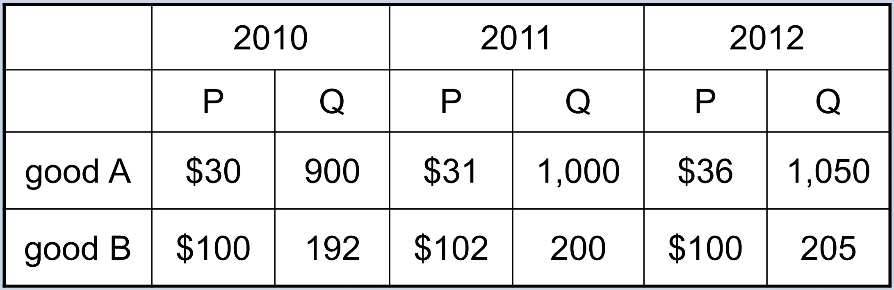
| 原文 | 中文对照 |
|---|---|
| Compute nominal GDP in each year. | 计算每年的名义 GDP。 |
| Compute real GDP in each year using 2010 as the base year. | 以 2010 年为基年，计算每年的实际 GDP。 |
教师备注（原文＋译文）4 段
教师备注（原文照录）
This slide (and a few of the following ones) contain exercises that you can have your students do in class for immediate reinforcement of the material.
This problem requires calculators. If most of your students do not have calculators, consider distributing copies of this slide for a homework exercise. Or, just have them write down the expressions that they would enter into a calculator if they had calculators, i.e., Nominal GDP in 2010 = $30 x 900 + $100 x 192.
教师备注（译文）
这一页（以及后面几页）是课堂练习，让学生当堂巩固所学材料。
本题需要计算器。如果多数学生没有计算器，可以考虑把这一页印发下去作为作业；或者只让他们写出会用计算器输入的表达式，即 2010 年名义 GDP = 30 × 900 + 100 × 192。
- 数据结构：两种产品（A、B）× 三年（2010、2011、2012），每年有价格 P 与数量 Q。
- 名义 GDP 用当年 P × 当年 Q；实际 GDP 用基年（2010） P × 当年 Q。答案见 2-32。
2-32NOW YOU TRY: Answers
| 原文 | 中文对照 |
|---|---|
| NOW YOU TRY: Answers | 现在你来试：答案 |
| Nominal GDP: multiply Ps & Qs from same year | 名义 GDP：同年份的 P 与 Q 相乘 |
| 2010: $46,200 = $30 × 900 + $100 × 192 | 2010：46,200 美元 = 30×900 + 100×192 |
| 2011: $51,400 | 2011：51,400 美元 |
| 2012: $58,300 | 2012：58,300 美元 |
| Real GDP multiply each year's Qs by 2010 Ps | 实际 GDP：各年 Q 乘以 2010 年 P |
| 2010: $46,200 | 2010：46,200 美元 |
| 2011: $50,000 | 2011：50,000 美元 |
| 2012: $52,000 = $30 × 1050 + $100 × 205 | 2012：52,000 美元 = 30×1050 + 100×205 |
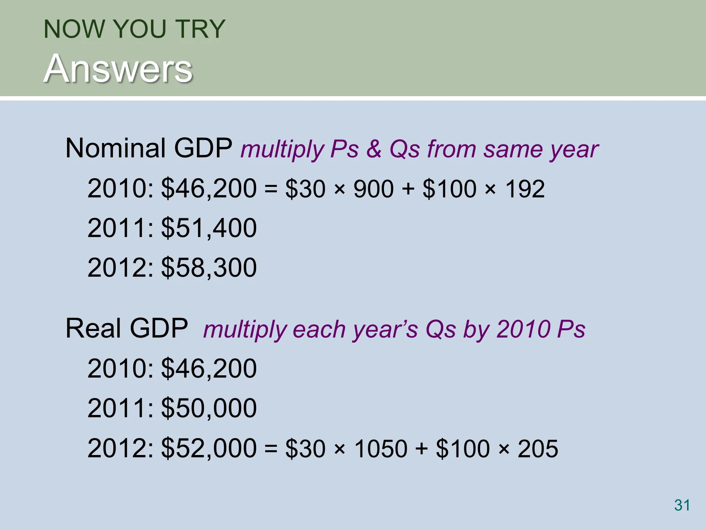
- 2011 年校验：31×1,000 + 102×200 = 31,000 + 20,400 = 51,400 ✓；实际 30×1,000 + 100×200 = 50,000 ✓。
- 2012 年校验：36×1,050 + 100×205 = 37,800 + 20,500 = 58,300 ✓；实际 30×1,050 + 100×205 = 31,500 + 20,500 = 52,000 ✓。
- 观察：2011→2012 名义增长 13.4%（51,400→58,300），实际只增长 4.0%（50,000→52,000），差额即物价上涨。
2-33Real GDP controls for inflation
| 原文 | 中文对照 |
|---|---|
| Real GDP controls for inflation | 实际 GDP 剔除了通胀影响 |
| Changes in nominal GDP can be due to: | 名义 GDP 的变化可能来自： |
| changes in prices | 价格变化 |
| changes in quantities of output produced | 生产的产出数量变化 |
| Changes in real GDP can only be due to changes in quantities because real GDP is constructed using constant base-year prices. | 实际 GDP 的变化只能来自数量变化，因为实际 GDP 是用固定基年价格构造的。 |
教师备注（原文＋译文）4 段
教师备注（原文照录）
Suppose from 2010 to 2011, nominal GDP rises by 10%. Some of this growth could be due to price increases, because an increase in the price of output causes an increase in the value of output, even if the real quantity remains the same.
Hence, to control for inflation, we use real GDP. Remember, real GDP is the value of output using constant base-year prices. If real GDP grows by 6% from 2010 to 2011, we can be sure that all of this growth is due to an increase in the economy's actual production of goods and services, because the same prices are used to construct real GDP in 2010 and 2011.
教师备注（译文）
假设 2010 到 2011 年名义 GDP 上升 10%。其中一部分增长可能来自价格上涨，因为产出的价格上升会使产出的价值上升，即使实际数量不变。
因此，为了剔除通胀，我们使用实际 GDP。记住，实际 GDP 是用固定基年价格计算的产出价值。如果 2010 到 2011 年实际 GDP 增长 6%，我们就可以确定这全部增长都来自经济实际的商品与服务生产的增加，因为 2010 与 2011 年的实际 GDP 是用同一套价格计算的。
- 逻辑链：名义 GDP 变化 = 价格效应 + 数量效应；实际 GDP 变化 = 纯数量效应。
- 「control for inflation」= 控制通胀变量，做法是固定价格（基年价格），让价格不再变化。
2-34U.S. nominal and real GDP, 1947–2020
| 原文 | 中文对照 |
|---|---|
| U.S. nominal and real GDP, 1947–2020 | 美国名义与实际 GDP，1947–2020 |
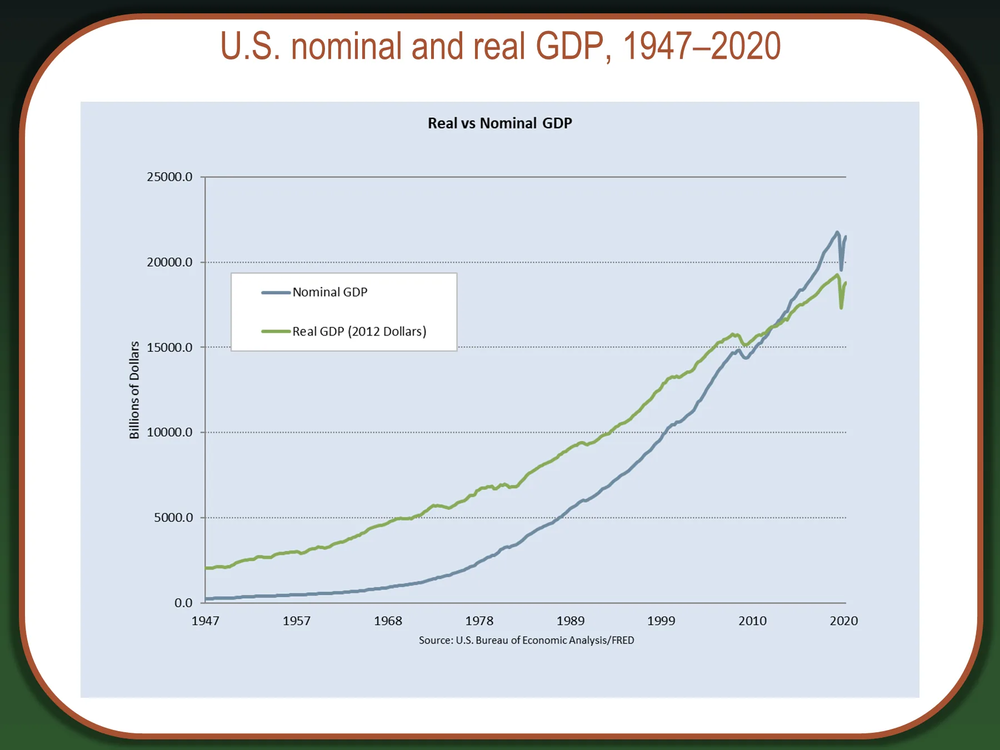
教师备注（原文＋译文）13 段
教师备注（原文照录）
Notice that nominal GDP is steeper than real GDP. That's because prices generally rise over time. So, nominal GDP grows at a faster rate than real GDP.
If you're like me, you might ask students if they know why the two lines cross in 2012.
Answer: 2012 is the base year for this real GDP data, so real GDP = nominal GDP in 2012 only.
Before 2009, real GDP > nominal GDP, while after 2009, real GDP < nominal GDP. This is intuitive if you think about it for a minute.
Take 1975. When the economy's output of 1975 is measured in the (then) current prices, GDP is about $1.5 trillion. Between 1975 and 2005, most prices rose. Hence, if you value the country's 1975 output using the higher prices of 2009 (to get real GDP), you get a bigger value than if you measure 1975's output using the lower prices of 1975 (nominal GDP). This explains why real GDP is larger than nominal GDP in 1975 (as in most or all years before the base year).
Source: Bureau of Economic Analysis
Obtained from FRED
Series: "GDP" for nominal GDP, "GDPC1" for real GDP. Both are quarterly, seasonally adjusted series.
教师备注（译文）
注意名义 GDP 的曲线比实际 GDP 更陡。这是因为价格总体随时间上升，所以名义 GDP 的增长速度快于实际 GDP。
如果你像我一样，可能会问学生是否知道两条线为什么在 2012 年相交。
答案：2012 年是这份实际 GDP 数据的基年，所以只有在 2012 年实际 GDP = 名义 GDP。
2009 年之前实际 GDP > 名义 GDP，2009 年之后实际 GDP < 名义 GDP。稍微想一下就很直观。
以 1975 年为例。用（当时的）当期价格衡量 1975 年的产出，GDP 约为 1.5 万亿美元。1975 到 2005 年间大多数价格上涨。因此，如果用 2009 年更高的价格来估值 1975 年的产出（得到实际 GDP），得到的结果会比用 1975 年较低的价格衡量（名义 GDP）更大。这就解释了为什么 1975 年（以及基年之前的大多数或所有年份）实际 GDP 大于名义 GDP。
- 关键结论：基年之前实际 > 名义，基年之后实际 < 名义，基年当年两者相等。
- 原因：实际 GDP 用基年价格估值，若基年价格高于当年价格，则实际值更大。
- 备注里的年份（2009 基年、1975 例）与标题（1947–2020）来自不同版本教材，原页如此；机制不变。
2-35GDP deflator（GDP 平减指数）
| 原文 | 中文对照 |
|---|---|
| GDP deflator（GDP平减指数） | GDP 平减指数 |
| Inflation rate: the percentage increase in the overall level of prices. | 通货膨胀率：总体价格水平的百分比增幅。 |
| One measure of the price level: GDP deflator | 价格水平的一种衡量：GDP 平减指数 |
| Definition: | 定义： |
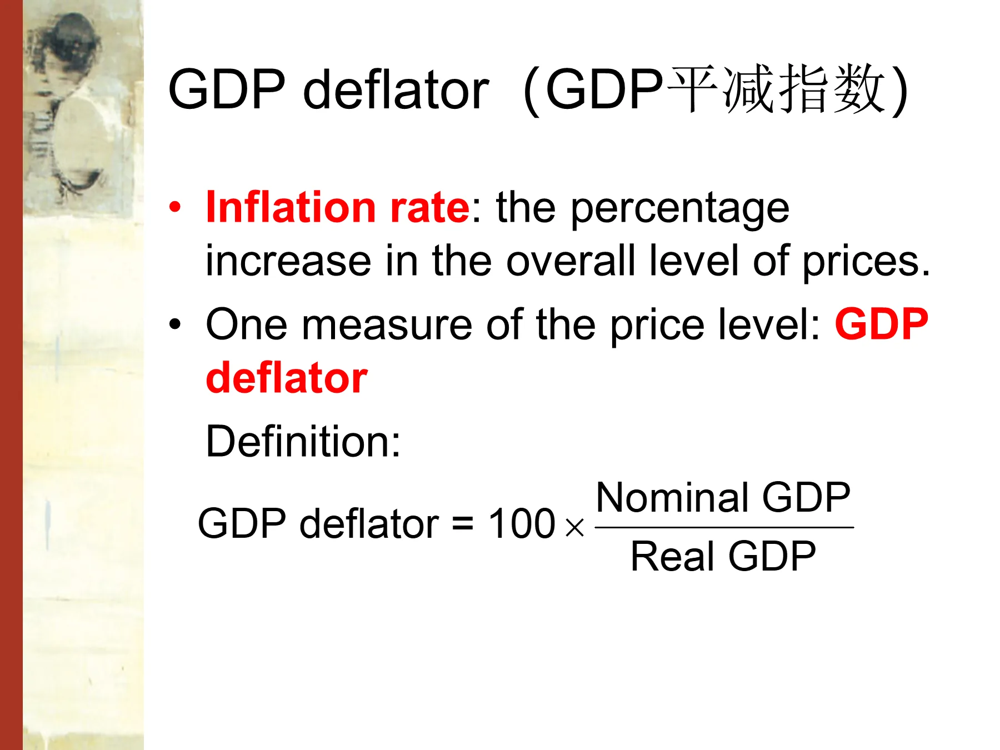
GDP deflator = 100 × (Nominal GDP / Real GDP)
GDP 平减指数 = 100 ×（名义 GDP / 实际 GDP）
教师备注（原文＋译文）4 段
教师备注（原文照录）
After revealing the first bullet point, mention that there are several measures of the overall price level. Your students are probably familiar with one of them—the CPI, which will be covered shortly. For now, though, we learn about a different one
, the GDP deflator. The GDP deflator is so named because it is used to deflate (remove the effects of inflation from) GDP and other economic variables.
教师备注（译文）
显示第一个要点后，说明衡量总体价格水平有若干种方法。学生可能熟悉其中一种——CPI，稍后会讲。现在我们先学另一种——GDP 平减指数。
GDP 平减指数之所以得名，是因为它被用来「平减」（从 GDP 与其他经济变量中剔除通胀影响）。
- 公式要能双向使用：已知名义与实际求平减指数；已知平减指数与实际求名义。
- 「deflate」的字面意思是「去通胀」，所以平减指数 > 100 表示物价高于基年，< 100 表示低于基年。
- 平减指数是帕氏指数（当期数量加权），CPI 是拉氏指数（基期数量加权）——这个区别在 2-52 展开。
2-36NOW YOU TRY: GDP deflator and the inflation rate
| Nom. GDP | Real GDP | GDP deflator | Inflation rate | |
|---|---|---|---|---|
| 2010 | $46,200 | $46,200 | n.a. | |
| 2011 | 51,400 | 50,000 | ||
| 2012 | 58,300 | 52,000 |
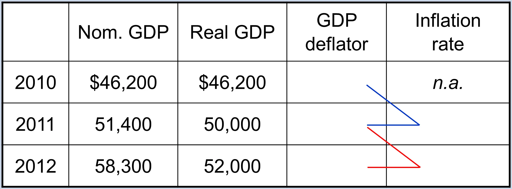
| 原文 | 中文对照 |
|---|---|
| Use your previous answers to compute the GDP deflator in each year. | 用你之前的答案计算每年的 GDP 平减指数。 |
| Use GDP deflator to compute the inflation rate from 2010 to 2011 and from 2011 to 2012. | 用 GDP 平减指数计算 2010→2011 与 2011→2012 的通胀率。 |
- 计算顺序：先算平减指数（名义/实际 × 100），再算通胀率（平减指数的百分比变化）。答案见 2-37。
2-37NOW YOU TRY: Answers
| Nom. GDP | Real GDP | GDP deflator | Inflation rate | |
|---|---|---|---|---|
| 2010 | $46,200 | $46,200 | 100.0 | n.a. |
| 2011 | 51,400 | 50,000 | 102.8 | 2.8% |
| 2012 | 58,300 | 52,000 | 112.1 | 9.1% |
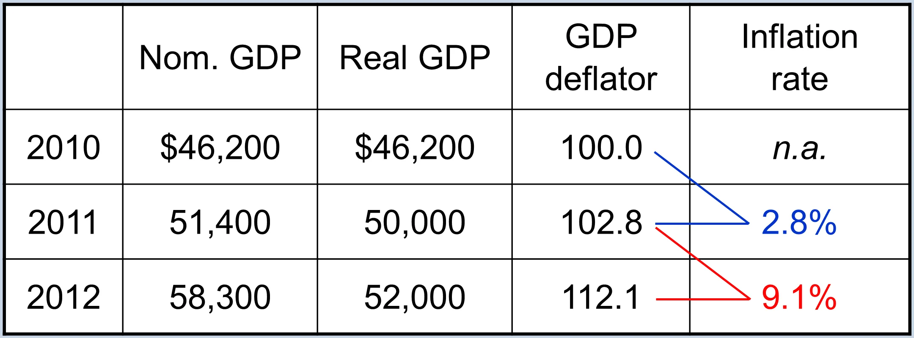
| 名义 GDP | 实际 GDP | GDP 平减指数 | 通胀率 | |
|---|---|---|---|---|
| 2010 | 46,200 | 46,200 | 100.0 | 不适用 |
| 2011 | 51,400 | 50,000 | 102.8 | 2.8% |
| 2012 | 58,300 | 52,000 | 112.1 | 9.1% |
- 校验：51,400/50,000 × 100 = 102.8；58,300/52,000 × 100 = 112.115 ≈ 112.1。
- 通胀率：102.8/100 − 1 = 2.8%；112.1/102.8 − 1 = 9.05% ≈ 9.1%。
- 2012 年通胀 9.1% 明显高于 2011 年的 2.8%，原因是 2012 年两种产品价格都大涨（A 从 31 涨到 36）。
2-38Understanding the GDP deflator（第 1 帧）
| 原文 | 中文对照 |
|---|---|
| Understanding the GDP deflator | 理解 GDP 平减指数 |
| Example with 3 goods | 三商品的例子 |
| For good i = 1, 2, 3 | 对商品 i = 1, 2, 3 |
| Pit = the market price of good i in month t | Pit = 商品 i 在 t 月的市场价格 |
| Qit = the quantity of good i produced in month t | Qit = 商品 i 在 t 月生产的数量 |
| NGDPt = Nominal GDP in month t | NGDPt = t 月的名义 GDP |
| RGDPt = Real GDP in month t | RGDPt = t 月的实际 GDP |
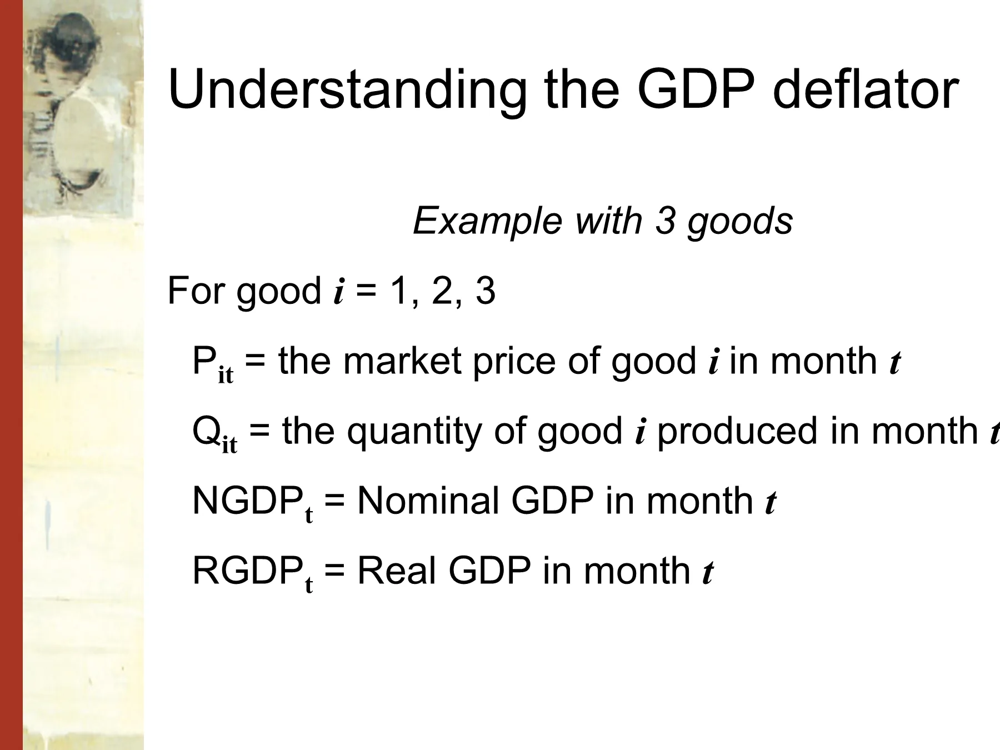
教师备注（原文＋译文）4 段
教师备注（原文照录）
This slide and the next one use simple algebra to show that the GDP deflator is a weighted average of prices; the weight on each price reflects that good's relative importance in real GDP.
This material is not in the textbook, so I have hidden this slide—it will not automatically display when viewing this PowerPoint presentation in Slide Show mode. If you wish to include this material, please unhide this slide and the next one, by unselecting "Hide Slide" on the Slide Show drop-down menu.
教师备注（译文）
这一页与下一页用简单代数说明 GDP 平减指数是价格的加权平均；每个价格的权重反映该商品在实际 GDP 中的相对重要性。
这部分材料不在教材中，所以我把这一页隐藏了——在放映模式下不会自动显示。如果你想讲这部分，请取消「隐藏幻灯片」，把这一页和下一页显示出来。
- 记号体系：P（价格）× Q（数量）→ NGDP；用基年价格算 → RGDP。
- 这两页是选学内容（原页被隐藏），但它是理解「平减指数为何是价格指数」的关键推导。
2-39Understanding the GDP deflator（第 2 帧）
| 原文 | 中文对照 |
|---|---|
| Understanding the GDP deflator | 理解 GDP 平减指数 |
| The GDP deflator is a weighted sum of prices. | GDP 平减指数是价格的加权和。 |
| The weight on each price reflects that good's relative importance in GDP. | 每个价格的权重反映该商品在 GDP 中的相对重要性。 |
| Note that the weights change over time. | 注意权重随时间变化。 |
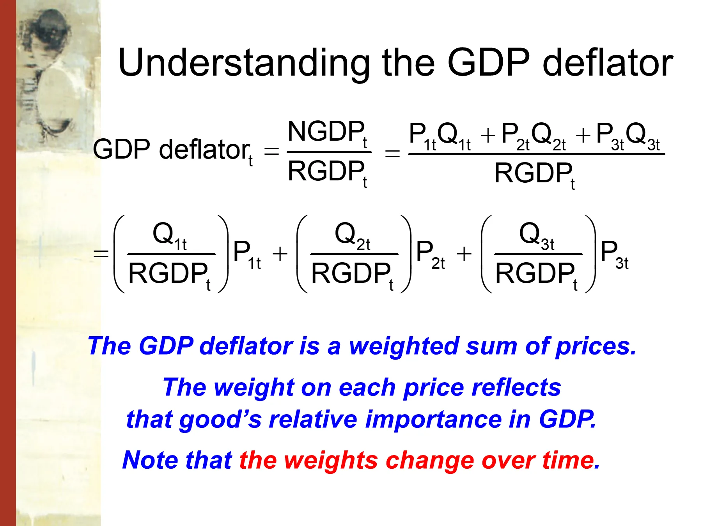
GDP deflator_t = NGDP_t / RGDP_t = (P1t·Q1t + P2t·Q2t + P3t·Q3t) / RGDP_t
= (Q1t/RGDP_t)·P1t + (Q2t/RGDP_t)·P2t + (Q3t/RGDP_t)·P3t
教师备注（原文＋译文）6 段
教师备注（原文照录）
(I have omitted the "100 x" from the formula for the GDP deflator so that this slide remains legible.)
The formula for the GDP deflator is 100*NGDP/RGDP. It's not obvious to most students that this is a measure of the average level of prices. But, using some simple algebra, this slide shows that the GDP deflator really is a weighted average of prices.
Note: Because the weights don't all sum to 1, the GDP deflator is a weighted sum, not a weighted average.
教师备注（译文）
（为了让这一页清晰可读，我省略了 GDP 平减指数公式中的「×100」。）
GDP 平减指数的公式是 100×NGDP/RGDP。对多数学生来说，这显然不是一个平均价格水平的度量。但通过一些简单代数，这一页说明 GDP 平减指数确实是价格的加权平均。
注：由于权重之和不等于 1，GDP 平减指数是加权和，而不是加权平均。
- 推导的关键一步：把分子按商品拆开，再把每个 P 提出来，前面的系数 Qit/RGDP_t 就是权重。
- 权重随 t 变化（因为 Q 变），这正是帕氏指数的特征——用当期数量加权。
- 注意备注的严格性：权重之和 = (Q1+Q2+Q3)/RGDP ≠ 1，所以严格说是「加权和」。
2-40Two arithmetic tricks for working with percentage changes（第 1 帧）
| 原文 | 中文对照 |
|---|---|
| Two arithmetic tricks for working with percentage changes | 处理百分比变化的两个算术技巧 |
| 1. For any variables X and Y, | 1. 对任意变量 X 与 Y， |
| percentage change in (X × Y) ≈ percentage change in X + percentage change in Y | （X × Y）的百分比变化 ≈ X 的百分比变化 + Y 的百分比变化 |
| Ex.: If your hourly wage rises 5% and you work 7% more hours, then your wage income rises approximately 12%. | 例：如果你的小时工资上涨 5%，工作时间增加 7%，那么你的工资收入大约增加 12%。 |
教师备注（原文＋译文）12 段
教师备注（原文照录）
These handy arithmetic tricks will be useful in many different contexts later in this book. For example, in the Quantity Theory of Money in Chapter 4, they help us understand how the Quantity Equation, MV = PY, gives us a relation between the rates of inflation, money growth, and GDP growth.
The example on this slide uses
wage income = (hourly wage) x (number of hours worked)
Another example would be
revenue = price x quantity
Students will see many more examples later in the textbook.
教师备注（译文）
这些方便的算术技巧在本书后面许多不同场合都会用到。例如第 4 章的货币数量论中，它们帮助我们理解数量方程 MV = PY 如何给出通胀率、货币增长率与 GDP 增长率之间的关系。
本页的例子用了
工资收入 =（小时工资）×（工作小时数）
另一个例子是
收入 = 价格 × 数量
学生在后面还会看到更多例子。
- 技巧 1：乘积的增长率 ≈ 各自增长率之和。严格说是 (1+gX)(1+gY) − 1 = gX + gY + gX·gY，交叉项很小可忽略。
- 本页例子：5% + 7% = 12%（精确值 1.05×1.07 − 1 = 12.35%）。
- 备注中的章节号（第 4 章）与本书实际章号（第 5 章）不一致，原页如此；本课程的数量论在 notes5（第 5 章）。
2-41Two arithmetic tricks for working with percentage changes（第 2 帧）
| 原文 | 中文对照 |
|---|---|
| Two arithmetic tricks for working with percentage changes | 处理百分比变化的两个算术技巧 |
| 2. Percentage change in (X/Y) ≈ percentage change in X − percentage change in Y | 2. （X/Y）的百分比变化 ≈ X 的百分比变化 − Y 的百分比变化 |
| Ex.: GDP deflator = 100 × NGDP/RGDP. | 例：GDP 平减指数 = 100 × 名义 GDP / 实际 GDP |
| If NGDP rises 9% and RGDP rises 4%, then the inflation rate is approximately 5%. | 如果名义 GDP 上升 9%、实际 GDP 上升 4%，则通胀率约为 5%。 |
教师备注（原文＋译文）4 段
教师备注（原文照录）
Again, we will see uses for this in many different contexts later in the textbook. For example, if your wage rises 10% while prices rise 6%, then your real wage – the purchasing power of your wage – rises by about 4%, because
real wage = (nominal wage)/(price level)
教师备注（译文）
同样，本书后面许多场合都会用到这一点。例如，如果你的工资上涨 10%、物价上涨 6%，那么你的实际工资——你工资的购买力——大约上涨 4%，因为
实际工资 =（名义工资）/（价格水平）
- 技巧 2：比率的增长率 ≈ 分子增长率 − 分母增长率。
- 三个直接应用要记：通胀率 ≈ 名义 GDP 增长率 − 实际 GDP 增长率（2-41）；实际工资增长率 ≈ 名义工资增长率 − 通胀率（备注）；实际利率 ≈ 名义利率 − 通胀率（第 5 章费雪方程）。
- 本页例子：9% − 4% = 5%（精确值 1.09/1.04 − 1 = 4.81%）。
2-42Chain-weighted（环比）real GDP
| 原文 | 中文对照 |
|---|---|
| Chain-weighted (环比) real GDP | 环比加权的实际 GDP |
| Over time, relative prices change, so the base year should be updated periodically. | 随着时间推移，相对价格会变化，所以基年应定期更新。 |
| In essence, chain-weighted real GDP updates the base year every year, so it is more accurate than constant-price GDP. | 本质上，环比加权实际 GDP 每年更新基年，因此比固定价格 GDP 更准确。 |
| Your textbook usually uses constant-price real GDP because: | 你的教材通常使用固定价格实际 GDP，因为： |
| the two measures are highly correlated | 两种度量高度相关 |
| constant-price real GDP is easier to compute | 固定价格实际 GDP 更容易计算 |
教师备注（原文＋译文）4 段
教师备注（原文照录）
Since constant-price GDP is easier to understand and compute, and because the two measures of real GDP are so highly correlated, this textbook emphasizes the constant-price version of real GDP.
However, if this topic is important to you and your students, you should have them carefully read pp. 25-26, and give them one or two exercises requiring students to compute or compare constant-price and chain-weighted real GDP.
教师备注（译文）
由于固定价格 GDP 更易理解与计算，且两种实际 GDP 度量高度相关，本教材侧重固定价格版本的实际 GDP。
不过，如果这个话题对你和你的学生重要，应让他们仔细阅读第 25–26 页，并给一两个练习，要求学生计算或比较固定价格与环比加权的实际 GDP。
- 固定价格法的问题：基年越远，相对价格偏离越大，权重失真（例如计算机价格暴跌后仍按旧权重计算）。
- 环比加权法：每年用相邻两年价格的平均做权数，逐年「链接」，因此基年在滚动更新。
- 现实对应：美国 BEA 自 1996 年起改用环比加权（chain-type）实际 GDP，1-4 图标题中的「chained 1996 dollars」即此意。
2-43Consumer price index (CPI)
| 原文 | 中文对照 |
|---|---|
| Consumer price index (CPI) | 消费价格指数（CPI） |
| A measure of the overall level of prices | 对总体价格水平的一种衡量 |
| Published by the Bureau of Labor Statistics (BLS) | 由美国劳工统计局（BLS）发布 |
| Uses: | 用途： |
| tracks changes in the typical household's cost of living | 追踪典型家庭生活成本的变化 |
| adjusts many contracts for inflation ("COLAs") | 为许多合同做通胀调整（「生活成本调整条款」） |
| allows comparisons of dollar amounts over time | 使不同时期的美元金额可以比较 |
教师备注（原文＋译文）6 段
教师备注（原文照录）
Regarding the comparison of dollar figures from different years:
If we want to know whether the average college graduate today is better off than the average college graduate of 1975, we can't simply compare the nominal salaries because the cost of living is so much higher now than in 1975. We can use the CPI to express the 1975 salary in "current dollars," i.e., what it would be worth at today's prices.
Also: when the price of oil (and hence gasoline) shot up in 2000, some in the news reported that oil prices were even higher than in the 1970s. This was true, but only in nominal terms. If you use the CPI to adjust for inflation, the highest oil price in 2000 is still substantially less than the highest oil prices of the 1970s.
教师备注（译文）
关于比较不同年份的美元金额：
如果我们想知道今天的大学生毕业生平均而言是否比 1975 年的毕业生过得更好，不能简单比较名义工资，因为现在的生活成本比 1975 年高得多。我们可以用 CPI 把 1975 年的工资换算成「当期美元」，即按今天物价计算它值多少。
另外：2000 年油价（以及汽油价格）飙升时，一些新闻报道说油价甚至高于 1970 年代。这没错，但只是在名义值上。如果用 CPI 做通胀调整，2000 年最高的油价仍明显低于 1970 年代的最高油价。
- 三大用途对应三类计算：生活成本追踪（通胀率）、合同指数化（COLA）、跨期比较（实际值换算）。
- 「当期美元」换算法：1975 年工资 ×（今日 CPI / 1975 年 CPI）。这是 CPI 最实用的技能，考试常给两年 CPI 让你换算。
- 油价例子说明：名义价格创新高 ≠ 实际价格创新高，必须用 CPI 平减。
2-44How the BLS constructs the CPI
| 原文 | 中文对照 |
|---|---|
| How the BLS constructs the CPI | BLS 如何构造 CPI |
| 1. Survey consumers to determine composition of the typical consumer's "basket" of goods | 1. 调查消费者，确定典型消费者「篮子」的商品构成 |
| 2. Every month, collect data on prices of all items in the basket; compute cost of basket | 2. 每月收集篮中所有项目的价格数据；计算篮子成本 |
| 3. CPI in any month equals | 3. 任一月度的 CPI 等于 |
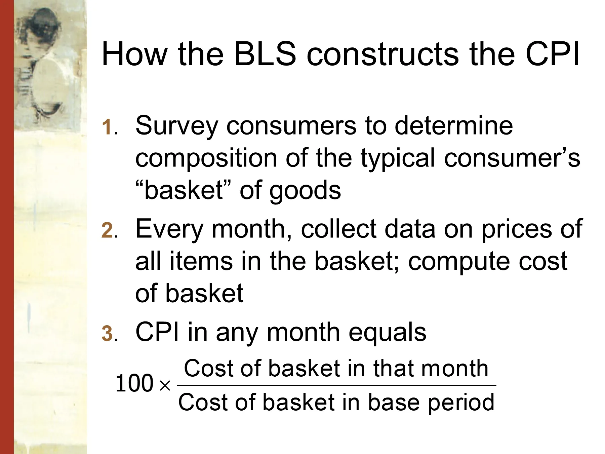
CPI = 100 × (Cost of basket in that month / Cost of basket in base period)
CPI = 100 ×（该月篮子成本 / 基期篮子成本）
- 三步法必须能复述：定篮子（定权重）→ 每月采价 → 算比值。关键是篮子固定不变，这正是 CPI 偏误的来源（2-50）。
- 公式与 GDP 平减指数同构（都是「当期/基期 × 100」），区别在于 CPI 的「篮子」是固定数量，平减指数的「篮子」是当期产量。
2-45NOW YOU TRY: Compute the CPI
| 原文 | 中文对照 |
|---|---|
| NOW YOU TRY: Compute the CPI | 现在你来试：计算 CPI |
| Basket: 20 pizzas, 10 compact discs | 篮子：20 个披萨、10 张唱片 |
| For each year, compute: | 对每一年计算： |
| the cost of the basket | 篮子成本 |
| the CPI (use 2012 as the base year) | CPI（以 2012 年为基年） |
| the inflation rate from the preceding year | 相对上一年的通胀率 |
原页数据（照录重排）
| 年份 | pizza | CDs |
|---|---|---|
| 2012 | $10 | $15 |
| 2013 | $11 | $15 |
| 2014 | $12 | $16 |
| 2015 | $13 | $15 |
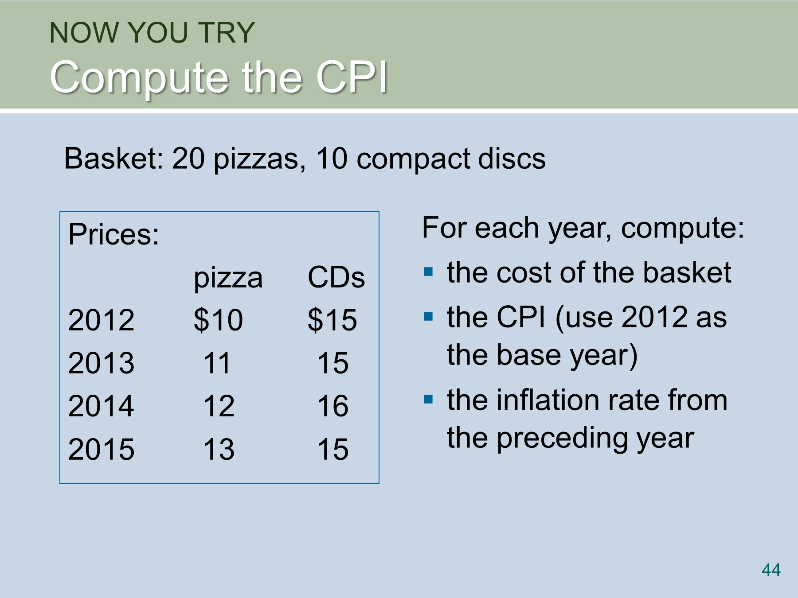
教师备注（原文＋译文）4 段
教师备注（原文照录）
From 2012 to 2013, it's not obvious that the inflation rate will be positive (that the basket's cost will increase): The price of pizza rises by $1, but the price of CDs falls by $1.
However, since the basket contains twice as many pizzas as CDs, a given change in the price of pizza will have a bigger impact on the basket's cost (and CPI) than will the same price change in CDs.
教师备注（译文）
从 2012 到 2013 年，通胀率是否为正（篮子成本是否上升）并不显然：披萨价格上涨 1 美元，但唱片价格下降 1 美元。
然而，由于篮子中披萨的数量是唱片的两倍，披萨价格的既定变化对篮子成本（以及 CPI）的影响，会大于唱片价格的同样变化。
- 权重的含义：20 个披萨 vs 10 张唱片 = 2:1，所以披萨价格变动的影响是唱片的两倍。
- 这正是 CPI 的「固定权重」特征：权重由基期数量决定，不随消费者替代行为改变（2-50 的替代偏误由此而来）。
2-46NOW YOU TRY: Answers
| Cost of basket | CPI | Inflation rate | |
|---|---|---|---|
| 2012 | $350 | 100.0 | n.a. |
| 2013 | 370 | 105.7 | 5.7% |
| 2014 | 400 | 114.3 | 8.1% |
| 2015 | 410 | 117.1 | 2.5% |
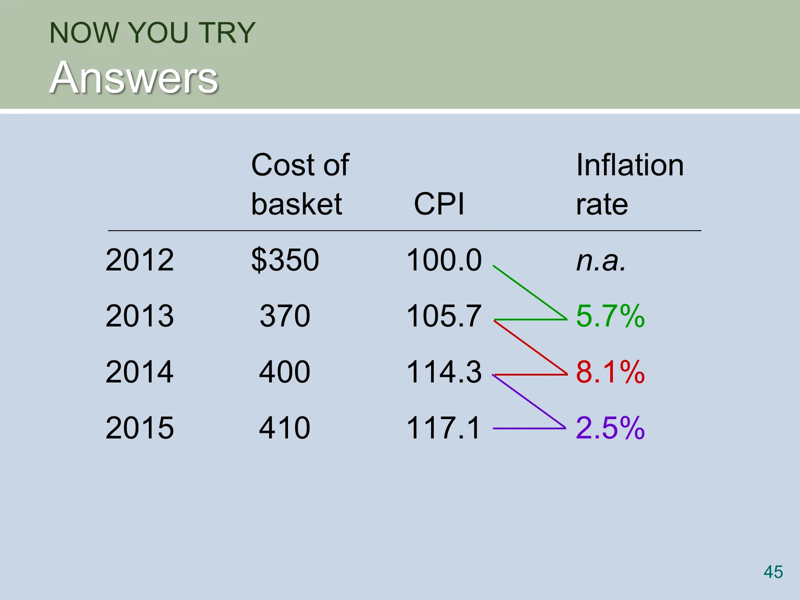
| 篮子成本 | CPI | 通胀率 | |
|---|---|---|---|
| 2012 | 350 美元 | 100.0 | 不适用 |
| 2013 | 370 美元 | 105.7 | 5.7% |
| 2014 | 400 美元 | 114.3 | 8.1% |
| 2015 | 410 美元 | 117.1 | 2.5% |
- 校验 2012：20×10 + 10×15 = 200 + 150 = 350 ✓；2013：20×11 + 10×15 = 220 + 150 = 370 ✓；2014：240 + 160 = 400 ✓；2015：260 + 150 = 410 ✓。
- CPI：370/350 = 105.71；400/350 = 114.29；410/350 = 117.14。
- 通胀率：5.7%、8.1%、2.5%。2014 年最高（披萨与唱片同时涨价），2015 年最低（唱片跌回 15）。
2-47The composition of the CPI's "basket"
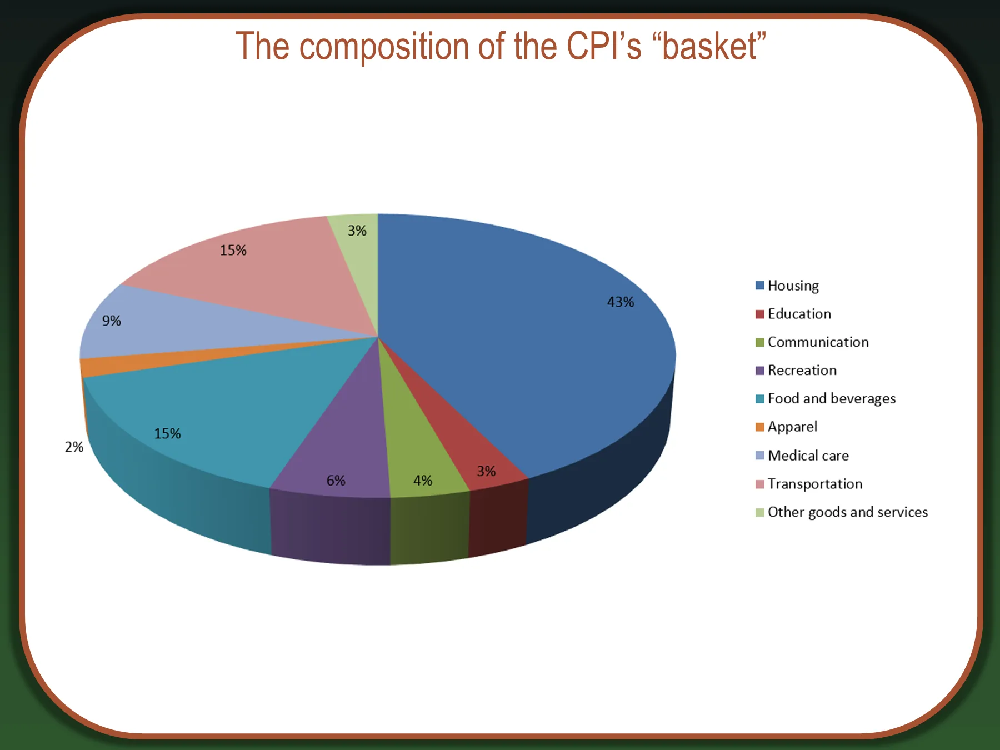
图中数据（照录）
| 类别 | 占比 |
|---|---|
| Housing（住房） | 43% |
| Food and beverages（食品与饮料） | 15% |
| Transportation（交通） | 15% |
| Medical care（医疗） | 9% |
| Recreation（娱乐） | 6% |
| Education（教育） | 3% |
| Communication（通信） | 3% |
| Apparel（服装） | 2% |
| Other goods and services（其他） | 3% |
教师备注（原文＋译文）12 段
教师备注（原文照录）
Each number is the percentage of the "typical" household's total expenditure.
Ask students for examples of how the breakdown of their own expenditures differs from that of the typical household shown here. Then ask students how the typical elderly person's expenditures might differ from those shown here. (This is relevant because the CPI is used to give Social Security COLAs to the elderly; however, the elderly spend a much larger fraction of their income on medical care, a category in which prices grow much faster than the CPI.)
The website listed below also gives a very fine disaggregation of each category, which enables students to compare their own spending on individual goods to that of the "typical" household.
Source: Bureau of Labor Statistics, http://www.bls.gov/news.release/cpi.t03.htm
U.S. city average, CPI-U.
Data in this graph are from Jan 2021.
教师备注（译文）
每个数字是「典型」家庭总支出中的百分比。
请学生举例说明自己的支出结构与图中典型家庭有何不同。然后问学生，典型老年人的支出结构可能与图中所示有何不同。（这与政策相关，因为 CPI 被用于给老年人发放社会保障的生活成本调整；然而老年人在医疗上的支出占比大得多，而医疗价格的上涨速度远快于 CPI。）
下面列出的网站还给出了各分类的细分数据，使学生可以把自己在单个商品上的支出与「典型」家庭比较。
来源：美国劳工统计局，http://www.bls.gov/news.release/cpi.t03.htm
美国城市平均，CPI-U。
本图数据为 2021 年 1 月。
- 三大项合计 73%（住房 43 + 食品 15 + 交通 15），这就是为什么房价与油价对 CPI 影响最大。
- 政策含义（备注点出）：CPI 用于社保 COLA，但老年人的医疗支出占比远高于 9%，而医疗价格涨得更快 → 老年人的实际生活成本被低估。这是 CPI 作为「生活成本指数」的群体偏误。
- 权重固定 = 拉氏指数（Laspeyres），与 2-52 的对比直接相关。
2-48Understanding the CPI（第 1 帧）
| 原文 | 中文对照 |
|---|---|
| Understanding the CPI | 理解 CPI |
| Example with 3 goods | 三商品的例子 |
| For good i = 1, 2, 3 | 对商品 i = 1, 2, 3 |
| Ci = amount of good i in the CPI's basket | Ci = CPI 篮子中商品 i 的数量 |
| Pit = price of good i in month t | Pit = 商品 i 在 t 月的价格 |
| Et = cost of the CPI basket in month t | Et = t 月 CPI 篮子的成本 |
| Eb = cost of the basket in the base period | Eb = 基期篮子的成本 |
教师备注（原文＋译文）4 段
教师备注（原文照录）
The next slide uses simple algebra to show that the CPI is a weighted average of prices; the weight on each price reflects that good's relative importance in the CPI basket. The algebra is very similar to that of an earlier slide that showed that the GDP deflator is a weighted average of prices.
I chose "E" to represent the cost of the basket because "E" stands for "Expenditure."
教师备注（译文）
下一页用简单代数说明 CPI 是价格的加权平均；每个价格的权重反映该商品在 CPI 篮子中的相对重要性。这个代数推导与前面说明 GDP 平减指数是价格加权平均的那一页非常相似。
我用「E」表示篮子成本，因为「E」代表「支出（Expenditure）」。
- 记号与 2-38 平行：C（篮子数量，固定）替代了 Q（当期产量，可变）——这一处替换就是 CPI 与平减指数的全部差别。
- Eb 是常数（基期成本），所以 CPI 的变动完全来自 Et。
2-49Understanding the CPI（第 2 帧）
| 原文 | 中文对照 |
|---|---|
| Understanding the CPI | 理解 CPI |
| The CPI is a weighted sum of prices. | CPI 是价格的加权和。 |
| The weight on each price reflects that good's relative importance in the CPI's basket. | 每个价格的权重反映该商品在 CPI 篮子中的相对重要性。 |
| Note that the weights remain fixed over time. | 注意权重随时间保持不变。 |
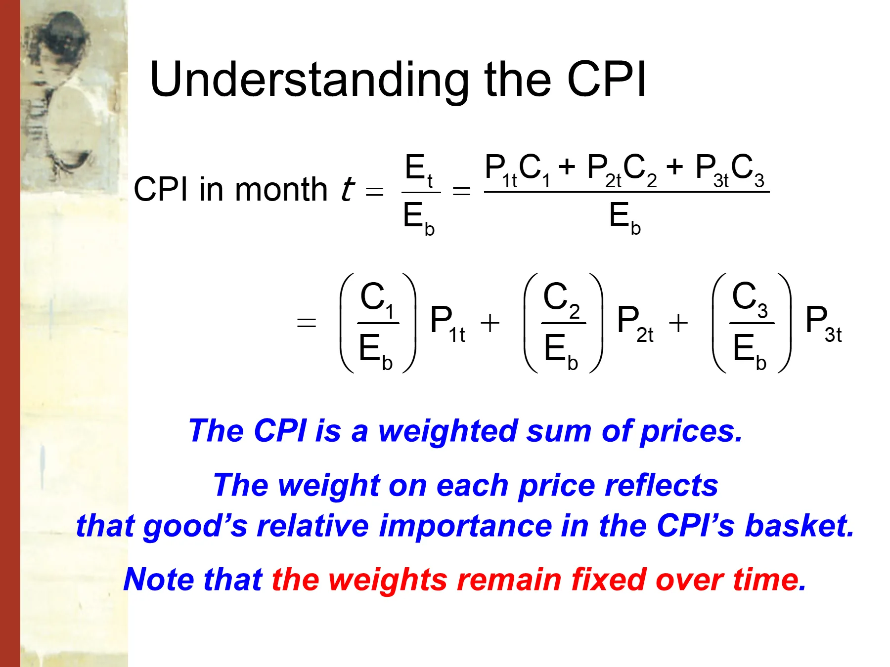
CPI in month t = E_t / E_b = (P1t·C1 + P2t·C2 + P3t·C3) / E_b
= (C1/E_b)·P1t + (C2/E_b)·P2t + (C3/E_b)·P3t
教师备注（原文＋译文）2 段
教师备注（原文照录）
Note: Because the weights don't all sum to 1, the CPI is a weighted sum, not a weighted average.
教师备注（译文）
注：由于权重之和不等于 1，CPI 是加权和，而不是加权平均。
- 权重 = Ci/Eb，只由基期决定，因此永远不变——与 2-39 平减指数「权重随时间变化」形成对照。
- 这就是拉氏（Laspeyres）指数与帕氏（Paasche）指数的本质区别：拉氏用基期数量，帕氏用当期数量。
2-50Why the CPI may overstate inflation
| 原文 | 中文对照 |
|---|---|
| Why the CPI may overstate inflation | 为什么 CPI 可能高估通胀 |
| Substitution bias: The CPI uses fixed weights, so it cannot reflect consumers' ability to substitute toward goods whose relative prices have fallen. | 替代偏误：CPI 使用固定权重，因此无法反映消费者转向相对价格下降的商品的替代能力。 |
| Introduction of new goods: The introduction of new goods makes consumers better off and, in effect, increases the real value of the dollar. But it does not reduce the CPI because the CPI uses fixed weights. | 新商品引入：新商品的引入使消费者处境更好，实际上提高了美元的实际价值。但由于 CPI 使用固定权重，它并不会因此下降。 |
| Unmeasured changes in quality: Quality improvements increase the value of the dollar but are often not fully measured. | 未测度的质量变化：质量改进提高了美元的价值，但往往没有被充分测度。 |
- 三大偏误要能各举一例： | 偏误 | 机制 | 例子 | |---|---|---| | 替代偏误 | 固定篮子 → 忽略消费者转向降价品 | 牛肉涨价，消费者改买鸡肉，CPI 仍按牛肉权重计 | | 新商品偏误 | 新商品带来的福利提升未进入篮子 | 智能手机 2007 年出现，CPI 篮子多年未含 | | 质量偏误 | 价格上升中有一部分是质量提升 | 同一价格买到性能翻倍的电脑，实际价格是下降的 |
- 三种偏误的方向一致：都使 CPI 高估通胀（因为都忽略了「同样的钱买到更多/更好」）。
2-51The size of the CPI's bias
| 原文 | 中文对照 |
|---|---|
| The size of the CPI's bias | CPI 偏误的幅度 |
| In 1995, a Senate-appointed panel of experts estimated that the CPI overstates inflation by about 1.1% per year. | 1995 年，一个由参议院任命的专家小组估计，CPI 每年高估通胀约 1.1%。 |
| So the BLS made adjustments to reduce the bias. | 因此 BLS 做了调整以减小偏误。 |
| Now, the CPI's bias is probably under 1% per year. | 现在，CPI 的偏误可能每年低于 1%。 |
- 两个数字：1995 年估计 1.1%/年；调整后低于 1%/年。
- 1.1% 的累积效应很大：按 1.1% 复利 20 年，价格水平被高估约 24%——这直接影响社保支出与指数化债券的支付。
- 政策链条：偏误 → BLS 调整方法（1999 年起用几何平均、引入替代效应）→ 2-51 的「低于 1%」。
2-52CPI（消费价格指数）vs. GDP deflator（GDP 平减指数）
| 原文 | 中文对照 |
|---|---|
| CPI (消费价格指数) vs. GDP deflator (GDP平减指数) | CPI 与 GDP 平减指数 |
| GDP deflaor includes all the G & S produced in the economy; CPI only includes a basket of some G & S. | GDP 平减指数包含经济中生产的所有商品与服务；CPI 只包含一部分商品与服务的篮子。 |
注：原文将 deflator 拼作 deflaor，此处照录不改。 | GDP deflator includes only domestic products; CPI may include imports. | GDP 平减指数只包含本国产品；CPI 可能包含进口品。 | | CPI has a fixed basket, so quantities do not change. Quantities may change in GDP deflator. | CPI 的篮子是固定的，所以数量不变；GDP 平减指数中的数量可以变化。 |
- 三条差异必须背成表：
| 维度 | CPI | GDP 平减指数 |
|---|---|---|
| 覆盖范围 | 只含消费者购买的「一篮子」 | 含全部国内生产的 G&S（投资品、政府购买也在内） |
| 进口品 | 包含（如进口汽车、进口食品） | 不包含（只算国内生产） |
| 权重 | 固定（基期数量，拉氏） | 可变（当期数量，帕氏） |
- 由此产生的经典现象：进口油价大涨时，CPI 上升但平减指数可能不升（因为石油不是本国生产的）。
2-53The PCE deflator（平减指数）
| 原文 | 中文对照 |
|---|---|
| The PCE deflator （平减指数） | PCE 平减指数 |
| Another measure of the price level: personal consumption expenditures (PCE) deflator, the ratio of nominal to real consumer spending | 价格水平的另一种衡量：个人消费支出（PCE）平减指数，即名义消费支出与实际消费支出之比 |
| How the PCE is like the CPI: - only includes consumer spending - includes imported consumer goods | PCE 与 CPI 的相似处：- 只包含消费者支出 - 包含进口消费品 |
| How the PCE is like the GDP deflator: - the "basket" changes over time | PCE 与 GDP 平减指数的相似处：- 「篮子」随时间变化 |
| The Federal Reserve prefers PCE. | 美联储更偏好 PCE。 |
教师备注（原文＋译文）2 段
教师备注（原文照录）
The reason the Fed prefers the PCE is that it has the positive attributes of both CPI (it includes only consumer spending) and the GDP deflator (the basket changes over time).
教师备注（译文）
美联储偏好 PCE 的原因是它兼具两者的优点：像 CPI 一样只包含消费者支出，又像 GDP 平减指数一样篮子随时间变化。
- PCE 平减指数 = 名义消费支出 / 实际消费支出 × 100，权重来自当期消费结构（可变），因此没有替代偏误。
- 三者定位：CPI（拉氏、固定篮子、含进口）→ 最常用；平减指数（帕氏、全部国内产出）→ 最全面；PCE（帕氏、只含消费、含进口）→ 美联储首选。
- 考试常问「为什么美联储用 PCE 而不用 CPI」，答案即备注那一句。
2-54Core Inflation（核心通胀）
| 原文 | 中文对照 |
|---|---|
| Core Inflation（核心通胀） | 核心通胀 |
| Another measure of inflation that excludes food and energy prices. | 另一种通胀衡量，剔除食品与能源价格。 |
| Good and energy prices have volatile in the short-run. | 商品与能源价格在短期波动很大。 |
| Sometimes viewed as a better gauge of underlying inflation trends. | 有时被视为基础通胀趋势的更好指标。 |
| There exists both Core CPI and Core PCE. | 核心 CPI 与核心 PCE 都存在。 |
- 剔除食品与能源的理由是波动性（volatility），不是它们不重要——恰恰相反，它们对家庭很重要，但月度噪声大，会掩盖趋势。
- 两个版本：Core CPI（BLS 发布）与 Core PCE（BEA 发布，美联储关注）。
- 用途差异：政策决策看核心（判断趋势），家庭感受看总体（含食品能源）。
2-55The GDP deflator, CPI, and PCE deflator
| 原文 | 中文对照 |
|---|---|
| The GDP deflator, CPI, and PCE deflator | GDP 平减指数、CPI 与 PCE 平减指数 |
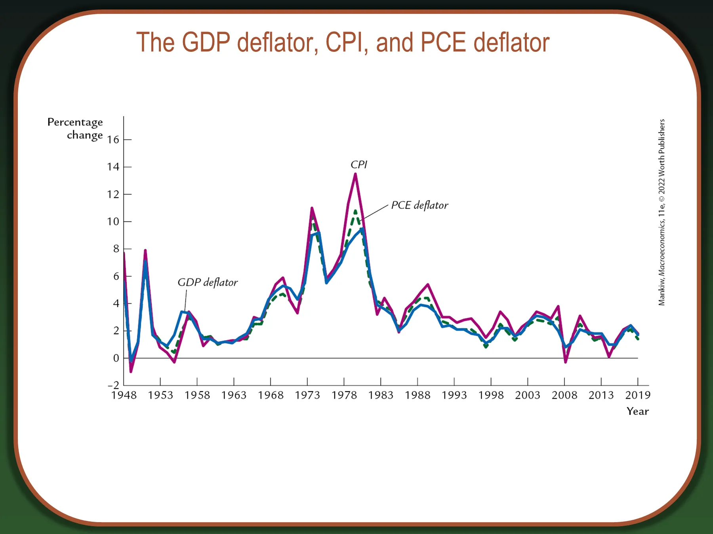
教师备注（原文＋译文）4 段
教师备注（原文照录）
Source: http://research.stlouisfed.org/fred2/
Series GDPDEF, PCEPI, and CPIAUCSL
教师备注（译文）
来源：http://research.stlouisfed.org/fred2/
序列：GDPDEF、PCEPI、CPIAUCSL
- 三条线长期同向、几乎重合，说明三种指数在测度同一现象；短期分歧来自覆盖范围与权重差异。
- 序列代码要记：GDPDEF（平减指数）、PCEPI（PCE 平减指数）、CPIAUCSL（CPI，全城市消费者）。
- 复习要点：能说出「三条线为何有时分离」——进口价格冲击（CPI 先动）、投资品价格（平减指数先动）、权重更新速度（PCE 最快）。
2-56Categories of the population: the household survey（家庭调查）
| 原文 | 中文对照 |
|---|---|
| Categories of the population: the household survey （家庭调查） | 人口的分类：家庭调查 |
| Employed working at a paid job | 就业者：从事有报酬的工作 |
| Unemployed not employed but looking for a job | 失业者：没有工作但在找工作 |
| Labor force （劳动力大军）the amount of labor available for producing goods and services; all employed plus unemployed persons | 劳动力：可用于生产商品与服务的劳动量；所有就业者加失业者 |
| Not in the labor force not employed, not looking for work | 不在劳动力中：没有工作，也不找工作 |
- 四分类的划分逻辑：先问「有没有工作」，再问「有没有在找」。 | 类别 | 有工作 | 在找工作 | |---|---|---| | 就业 | 是 | — | | 失业 | 否 | 是 | | 不在劳动力 | 否 | 否 |
- 关键恒等式：成年人口 = 劳动力 + 不在劳动力 =（就业 + 失业）+ 不在劳动力。
- 「失业」的统计定义要求** actively looking，因此灰心丧气的求职者（discouraged workers）会被划出劳动力，从而低估**失业率。
2-57Two important labor force concepts
| 原文 | 中文对照 |
|---|---|
| Two important labor force concepts | 两个重要的劳动力概念 |
| Unemployment rate percentage of the labor force that is unemployed | 失业率：失业者占劳动力的百分比 |
| Labor force participation rate （劳动参与率）the fraction of the adult population that "participates" in the labor force, i.e. is working or looking for work | 劳动参与率：成年人口中「参与」劳动力的比例，即在工作或正在找工作 |
- 两个公式必须默写：
- 失业率 u = U / L × 100%，其中 L = E + U
- 参与率 LFPR = L / POP × 100%
- 注意分母不同：失业率的分母是劳动力，参与率的分母是成年人口。这是最常见的计算错误来源。
2-58NOW YOU TRY: Computing labor statistics
| 原文 | 中文对照 |
|---|---|
| NOW YOU TRY: Computing labor statistics | 现在你来试：计算劳动统计 |
| U.S. adult population by group, February 2021 | 2021 年 2 月美国成年人口分组 |
| Number employed = 150.24 million | 就业人数 = 1.5024 亿 |
| Number unemployed = 9.72 million | 失业人数 = 972 万 |
| Adult population = 260.66 million | 成年人口 = 2.6066 亿 |
| Calculate | 计算 |
| the labor force | 劳动力 |
| the unemployment rate | 失业率 |
| the labor force participation rate | 劳动参与率 |
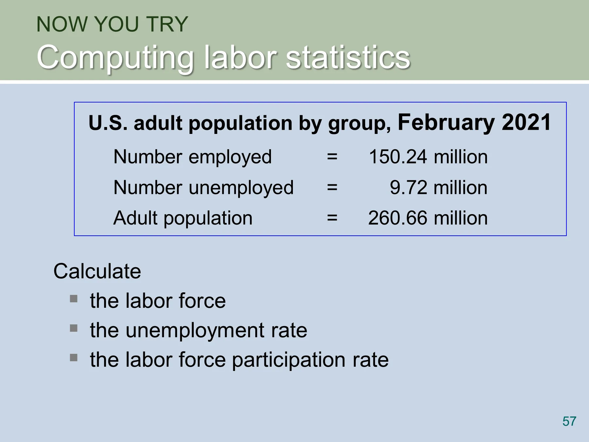
教师备注（原文＋译文）8 段
教师备注（原文照录）
Source: Bureau of Labor Statistics, U.S. Department of Labor http://www.bls.gov
https://www.bls.gov/webapps/legacy/cpsatab1.htm
The population measured used here is the adult civilian non-institutional population.
Note: Differences from the official number would be due to rounding
教师备注（译文）
来源：美国劳工部劳工统计局 http://www.bls.gov
https://www.bls.gov/webapps/legacy/cpsatab1.htm
这里使用的人口口径是成年平民非机构人口。
注：与官方数字的差异源于四舍五入。
- 三个数据：E = 150.24、U = 9.72、POP = 260.66（百万人）。
- 口径要点（备注）：成年平民非机构人口——不含军人、监狱与养老院人口，这是 BLS 的标准口径。
- 计算顺序：先求 L = E + U，再求两个比率。答案见 2-59。
2-59NOW YOU TRY: Answers
| 原文 | 中文对照 |
|---|---|
| NOW YOU TRY: Answers | 现在你来试：答案 |
| Data: E = 150.24, U = 9.72, POP = 260.66 | 数据：E = 150.24，U = 9.72，POP = 260.66 |
| Labor force L = E + U = 150.24 + 9.72 = 159.96 | 劳动力 L = E + U = 150.24 + 9.72 = 159.96 |
| Unemployment rate U/L x 100% = (9.72/159.96) × 100% = 6.1% | 失业率 U/L × 100% =（9.72/159.96）× 100% = 6.1% |
| Labor force participation rate L/POP x 100% = (159.96/260.66) × 100% = 61.37% | 劳动参与率 L/POP × 100% =（159.96/260.66）× 100% = 61.37% |
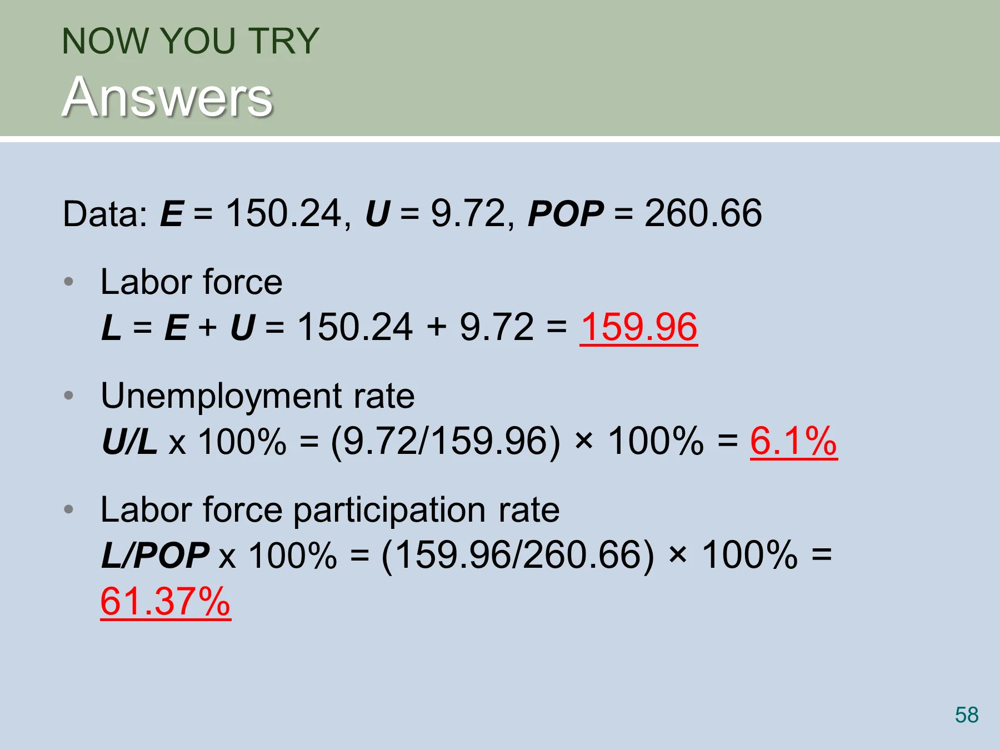
- 三个结果：L = 159.96 百万；u = 6.1%；LFPR = 61.37%。
- 校验：9.72/159.96 = 0.06077 → 6.08% ≈ 6.1%；159.96/260.66 = 0.61367 → 61.37%。
- 注意 6.1% 与 61.37% 相差 10 倍，写答案时务必核对分母是 L 还是 POP。
2-60The establishment survey（机构调查）
| 原文 | 中文对照 |
|---|---|
| The establishment survey（机构调查） | 机构调查 |
| The BLS obtains a second measure of employment by surveying businesses, asking how many workers are on their payrolls. | BLS 通过对企业进行调查获得就业的第二个度量，询问它们有多少在册员工。 |
| Neither measure is perfect, and they occasionally diverge due to: | 两种度量都不完美，它们偶尔分歧的原因包括： |
| treatment of self-employed persons | 对自雇者的处理 |
| new firms not counted in establishment survey | 新企业未被机构调查计入 |
| technical issues involving population inferences from sample data | 涉及从样本数据推断总体的技术问题 |
- 两种调查的对象不同：家庭调查问人（含自雇、农业、家务劳动），机构调查问企业（只含在册雇员，不含自雇）。
- 三条分歧来源要记：自雇者处理、新企业遗漏（机构调查的抽样框更新慢）、抽样推断的技术问题。
- 用途分工：失业率来自家庭调查；非农就业人数（payroll）来自机构调查。
2-61The measures of employment growth
| 原文 | 中文对照 |
|---|---|
| The measures of employment growth | 就业增长的度量 |
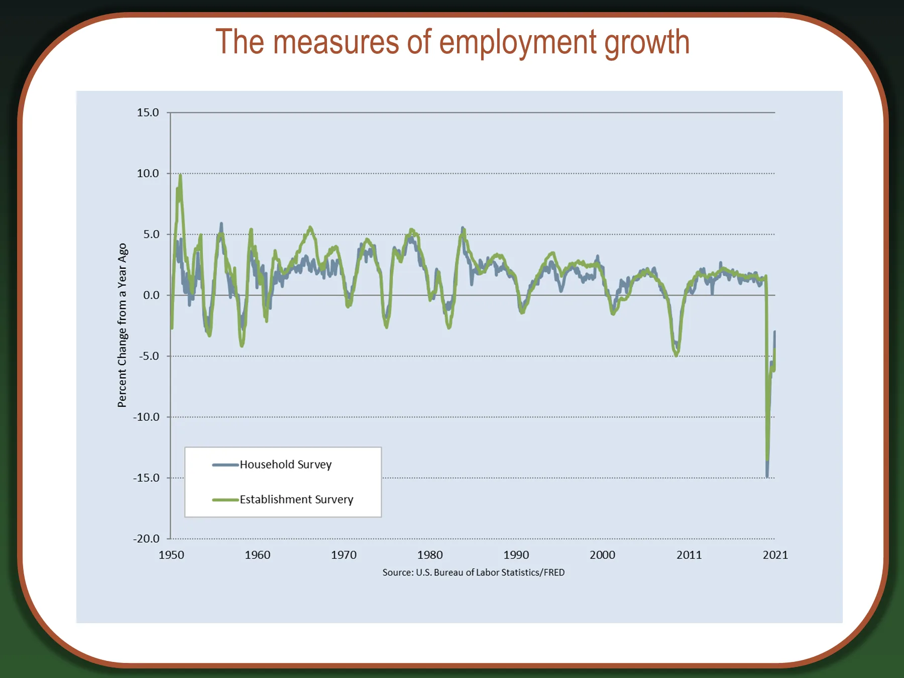
教师备注（原文＋译文）14 段
教师备注（原文照录）
This graph shows the percentage change in total U.S. non-farm employment from 12 months earlier (based on monthly, seasonally adjusted data from the Bureau of Labor Statistics) from two surveys: the household survey, which is used to generate the widely known unemployment rate data, and the establishment survey.
The textbook discusses the establishment survey in detail and contrasts it with the household survey to help explain the divergences.
Source: Bureau of Labor Statistics, obtained from
http://research.stlouisfed.org/fred2/
Series used in graph:
Household survey: CE16OV, seasonally adjusted
Establishment survey: PAYEMS, seasonally adjusted
教师备注（译文）
这张图显示美国非农总就业相对于 12 个月前的百分比变化（基于劳工统计局的月度季调数据），数据来自两种调查：用于生成广为人知的失业率数据的家庭调查，以及机构调查。
教材详细讨论了机构调查，并与家庭调查对比，以帮助解释两者的分歧。
来源：美国劳工统计局，取自
http://research.stlouisfed.org/fred2/
图中使用的序列：
家庭调查：CE16OV，季调
机构调查：PAYEMS，季调
- 两条线长期同向、短期分歧，衰退期分歧最大（因为自雇与新企业在这两个时期变化剧烈）。
- 序列代码：家庭调查 CE16OV（就业水平），机构调查 PAYEMS（非农在册就业）。
- 复习要点：能解释「为什么同一个月两份报告可以一正一负」——口径差异（自雇、新企业、多重职业者）。
2-62CHAPTER SUMMARY（第 1 帧）
| 原文 | 中文对照 |
|---|---|
| CHAPTER SUMMARY | 本章总结 |
| Gross domestic product (GDP) measures both total income and total expenditure on the economy's output of goods & services. | 国内生产总值（GDP）既衡量总收入，也衡量对经济产出的商品与服务的总支出。 |
| Nominal GDP values output at current prices; real GDP values output at constant prices. Changes in output affect both measures, but changes in prices only affect nominal GDP. | 名义 GDP 按当期价格估值产出；实际 GDP 按不变价格估值。产出变化影响两者，但价格变化只影响名义 GDP。 |
| GDP is the sum of consumption, investment, government purchases, and net exports. | GDP 是消费、投资、政府购买与净出口之和。 |
- 三句话对应三组考点：GDP 的双重含义（2-4、2-26）→ 名义/实际之分（2-30 ~ 2-33）→ 支出构成恒等式（2-11）。
- 最后一句是第 3 章产品市场模型的直接起点。
2-63CHAPTER SUMMARY（第 2 帧）
| 原文 | 中文对照 |
|---|---|
| CHAPTER SUMMARY | 本章总结 |
| The overall level of prices can be measured by either: | 总体价格水平可以用以下任一方式衡量： |
| the consumer price index (CPI), the price of a fixed basket of goods purchased by the typical consumer, or | 消费价格指数（CPI），即典型消费者购买的一篮子固定商品的价格；或 |
| the GDP deflator, the ratio of nominal to real GDP. | GDP 平减指数，即名义 GDP 与实际 GDP 之比。 |
| The unemployment rate is the fraction of the labor force that is not employed. | 失业率是劳动力中没有工作的比例。 |
- 两个物价指数的定义要能互换表述：CPI = 固定篮子的当期成本/基期成本；平减指数 = 名义/实际。
- 失业率的定义句有一个常见陷阱：「not employed」不等于「unemployed」——必须是没有工作且在找工作（2-56）。
- 本章三个统计量分别对接第 3、5、7 章，复习时可按「GDP → 第 3 章」「CPI → 第 5 章」「u → 第 7 章」建立索引。